Phần mở đầu — Bìa, Lời khen, Bản quyền, Lời cảm ơn & Mục lục
Thần Kinh – Cơ
Liệu Pháp
Một Cách Tiếp Cận Sáng Tạo
Đối Với
Kiểm Tra Cơ
Thủ Công
David Weinstock
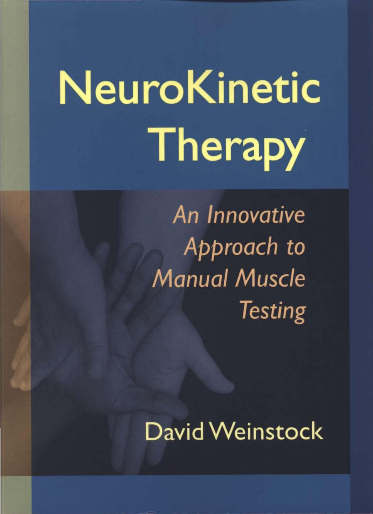
Liệu Pháp Thần Kinh – Cơ (NKT) trình bày phương pháp kiểm tra cơ thủ công được sử dụng với một quy trình cụ thể được thiết kế đặc biệt để kích thích phức hợp cơ thể – tâm trí nhằm giải quyết chấn thương, căng thẳng và đau đớn. Khác với các phương pháp trị liệu chỉ điều trị triệu chứng, Liệu Pháp Thần Kinh – Cơ đi đến tận gốc của vấn đề bằng cách lập trình lại các kiểu vận động rối loạn chức năng. Được viết cho cả những nhà trị liệu mới bắt đầu lẫn những người có kinh nghiệm, cuốn sách này bao gồm các ảnh chụp chi tiết minh họa việc kiểm tra chức năng cơ. Được tổ chức theo giải phẫu, mỗi phần giới thiệu các cơ và các bài kiểm tra tương ứng cho cổ, thân mình và các chi, kèm theo các minh họa giải phẫu có nhãn thể hiện mối quan hệ giữa các cơ và các nhóm cơ. Cuốn sách này là một nguồn tài liệu thiết yếu dành cho các chuyên gia thực hành muốn bổ sung cho công việc hiện tại của họ bằng một cách tiếp cận sáng tạo trong việc điều trị các nguyên nhân tiềm ẩn gây đau.
"Trong số rất nhiều cuốn sổ tay được gọi là trị liệu trong lĩnh vực đánh giá và điều trị thần kinh – cơ, rất ít cuốn thực sự đáp ứng được tiêu chuẩn kép là vừa nâng cao kỹ năng vừa dựa trên một nền tảng khoa học vững chắc. Liệu Pháp Thần Kinh – Cơ của David Weinstock không chỉ đáp ứng tiêu chuẩn đó mà còn nâng nó lên một tầm cao mới. Kết hợp chi tiết giải phẫu với các minh họa và ảnh chụp tuyệt đẹp, cuốn sách hướng dẫn tỉ mỉ chuyên gia thực hành học phương pháp trị liệu tinh tế nhưng rất mạnh mẽ này.... Thật là một niềm vui khi rời bỏ cách điều trị lặp đi lặp lại để thực sự giải tỏa ảnh hưởng của chấn thương, căng thẳng và tư thế kém ở bệnh nhân."
-Steven Katz, DC, Katz Chiropractic, Mill Valley, California "Cuốn sách của David Weinstock giúp cả các nhà trị liệu thủ công mới bắt đầu lẫn có kinh nghiệm mở rộng kỹ năng đánh giá của họ và xác định chiến lược điều trị tiếp theo. Cuốn sách cực kỳ có tổ chức, chứa đầy ảnh chụp và minh họa đẹp mắt, giúp hướng dẫn các chuyên gia thực hành tiếp cận một cách kiểm tra cơ thủ công cụ thể và ý nghĩa hơn. Weinstock tập hợp toàn bộ kiến thức và kinh nghiệm phong phú của mình trong tái giáo dục thần kinh – cơ và trị liệu thủ công trong cuốn sách được viết tốt, dễ theo dõi này."
Cindy Lewton Dehan, nhà vật lý trị liệu, Active Marin Physical Therapy,
Larkspur, California "Cuối cùng là một cuốn sổ tay được viết bằng ngôn ngữ dễ hiểu, với kết quả thực tế cho người dùng cuối. Các ảnh chụp rõ ràng và súc tích. Weinstock nắm bắt được bản chất và tầm quan trọng cực lớn của kiểm tra cơ đối với bất kỳ hoạt động thể chất. Tôi không nghi ngờ rằng cuốn sách này sẽ trở thành kim chỉ nam cho mọi loại hình huấn luyện vận động và các chương trình giáo dục dành cho chuyên gia. Tôi đã thêm nó vào danh sách đọc bắt buộc cho tất cả học viên tham gia các chương trình chứng nhận pilates của chúng tôi."
-Stacy Allegro, giám đốc, Fit First Pilates, Corte Madera, California
Sức Khỏe/Trị Liệu Cơ Thể
North Atlantic Books
Berkeley, California www.northatlanticbooks.com
US$18.95/$23.00CAN
ISBN 978-1-55643-877-6
51895 9781556438776
bài tập Egoscue."
- Bruce Rizzo, DC, ART, My Chiro Care,
Berkeley, California bổ sung cho thư viện của bất kỳ huấn luyện viên nào."
Fit Bridge, Mill Valley, California
Corte Madera, California
Lời Khen Ngợi Dành Cho Liệu Pháp Thần Kinh – Cơ "Liệu Pháp Thần Kinh – Cơ là một trong những tài liệu hướng dẫn trị liệu thủ công tốt nhất hiện có. Bố cục và ảnh chụp giúp người đọc dễ theo dõi và hiểu. Đây là một công cụ tuyệt vời và sẽ hữu ích trong thực hành của tôi, bổ sung cho công việc của tôi với chỉnh hình xương sống, Kỹ Thuật Giải Phóng Chủ Động (ART), và "Liệu Pháp Thần Kinh – Cơ là một công cụ vô giá sẽ nâng cao đáng kể kho tàng kỹ năng và trình độ chuyên môn của một huấn luyện viên cá nhân. Khách hàng thường đến với huấn luyện viên với những chấn thương cũ sau đó đã tạo ra các kiểu bù trừ hoặc mất cân bằng cơ. Liệu Pháp Thần Kinh – Cơ cung cấp hướng dẫn chi tiết giúp khách hàng lấy lại khả năng kiểm soát cơ cần thiết để đứng vững; cuốn sách chỉ cho huấn luyện viên cách chính xác và hiệu quả đánh giá và kiểm tra khách hàng. Các ảnh chụp trong sách giúp huấn luyện viên biết chính xác nơi đặt áp lực và cách khách hàng cần được định vị để bài kiểm tra cơ phát huy tác dụng. Cuốn sổ tay này là một
- David Phillips, CES, huấn luyện viên cá nhân được chứng nhận NASM, "Kiểm tra cơ được sử dụng trong nhiều lĩnh vực nhưng trước đây chưa có sự nhất quán trong cách thực hiện. Trong cuốn sách mới Liệu Pháp Thần Kinh – Cơ,
David Weinstock minh họa rõ ràng kỹ thuật này một cách súc tích và kỹ lưỡng. Ông đề cập việc kiểm tra từng cơ riêng lẻ, kèm theo hình ảnh rõ nét, bao gồm điểm khởi đầu, điểm bám và tác dụng giải phẫu của chúng."
Cuốn sách này nên có trong thư viện của bất kỳ chuyên gia mô mềm nào."
-Douglas Kyle, DC, DABCO, ART, Marin Spine and Sport,
San Rafael, California gây đau. Cuốn sách này là một kho báu!"
Mill Valley, California "Liệu Pháp Thần Kinh – Cơ trình bày rõ ràng và kỹ lưỡng các kỹ thuật kiểm tra cơ cùng với giải phẫu liên quan, nhưng chính việc sử dụng nó với NKT mới là bước tiến vượt trội so với các mô hình massage và tăng cường sức mạnh thường được áp dụng trước đây. Tôi luôn tin tưởng David với những cơn đau khó giải quyết, cả về chuyên môn lẫn cá nhân, và luôn thành công."
- Caryl Sircus, nhà vật lý trị liệu, Aquatic Therapy Associates, "Vừa súc tích vừa rõ ràng, cuốn sách thấm đẫm tinh thần phục hồi và trị liệu chỉnh hình. Đối với một huấn luyện viên yoga, cuốn sách cung cấp bộ kỹ năng sâu hơn và nền tảng kiến thức để làm việc và giảng dạy. Nó có thể hỗ trợ rất nhiều sự toàn vẹn cấu trúc của học viên, đồng thời mang lại khả năng chữa lành bất kỳ chấn thương nào có thể đang hạn chế toàn bộ tầm vận động hoặc
-James Higgins, huấn luyện viên yoga, Yoga Studio,
Thần Kinh – Cơ
Liệu Pháp
Một Cách Tiếp Cận Sáng Tạo Đối Với
Kiểm Tra Cơ Thủ Công
David Weinstock
North Atlantic Books
Berkeley, California
Bản quyền © 2010 bởi David Weinstock. Mọi quyền được bảo lưu. Không phần nào của cuốn sách này, ngoài trừ các bài đánh giá ngắn, được sao chép, lưu trữ trong hệ thống truy xuất, hoặc truyền tải dưới bất kỳ hình thức hay phương tiện nào—điện tử, cơ khí, sao chép, ghi âm, nếu không có sự cho phép của nhà xuất bản. Liên hệ North Atlantic Books để biết thêm chi tiết.
Được xuất bản bởi
North Atlantic Books
P.O. Box 12327
Berkeley, California 94712
Ảnh bìa bởi David Spindler
Thiết kế bìa và sách bởi Jan Camp và Brad Greene
Được in tại Hợp Chủng Quốc Hoa Kỳ
Liệu Pháp Thần Kinh – Cơ: Một Cách Tiếp Cận Sáng Tạo Đối Với Kiểm Tra Cơ Thủ Công được tài trợ bởi Hội Nghiên Cứu Nghệ Thuật Và Khoa Học Bản Địa, một tổ chức giáo dục phi lợi nhuận với mục tiêu phát triển một cái nhìn giáo dục và đa văn hóa kết nối các lĩnh vực khoa học, xã hội và nghệ thuật; nuôi dưỡng cái nhìn toàn diện về nghệ thuật, khoa học, nhân văn và chữa lành; và xuất bản, phân phối các tài liệu về mối liên hệ giữa tâm trí, cơ thể và thiên nhiên.
Các ấn phẩm của North Atlantic Books có thể tìm thấy tại hầu hết các hiệu sách. Để biết thêm thông tin, truy cập trang web tại www.northatlanticbooks.com hoặc gọi 800-733-3000.
Dữ Liệu Biên Mục Trước Khi Xuất Bản Của Thư Viện Quốc Hội
Weinstock, David, 1951
Liệu pháp Thần Kinh – Cơ: một cách tiếp cận sáng tạo đối với kiểm tra cơ thủ công / David Weinstock.
p.; cm.
Có kèm chỉ mục.
ISBN 978-1-55643-877-6
1. Kinesiology ứng dụng—Sổ tay, tài liệu hướng dẫn, v.v. I. Tiêu đề. |DNL.M:
1. Kinesiology, Ứng dụng—Phương pháp—Sổ tay. 2. Cơ bắp—Sổ tay. 3. Yếu cơ—chẩn đoán—Sổ tay. 4. Yếu cơ—trị liệu—Sổ tay. 5. Cơ— chấn thương—Sổ tay. WB39W4248n2009)
RZ251.A65.W452009
613.7--dc22
123456789SHERIDAN1413121110
2009015575
Dành cho các thầy cô của tôi, đồng nghiệp, học viên và khách hàng những người đã truyền cảm hứng cho sự ứng biến tạo nên tác phẩm này.
Lời Cảm Ơn
Cuốn sổ tay này đã không thể thành hình.
Tôi xin tri ân những người sau đây, nếu không có họ kỹ thuật này đã không thể phát triển: Vernon Brooks, John Thie, Kendall và Kendall, Jocelyn Olivier (lòng biết ơn sâu sắc), Gale Ulvang, Howard
Nemerov, Brian Edwards và Cissy Spindler (người mẫu), David Spindler
Crabtree và Isalina Chow (đồ họa máy tính cho các minh họa giải phẫu), và đặc biệt là Laurie Higginbotham, nếu không có công việc của cô ấy
Mục Lục
Lời Nói Đầu...
..xiii
Dẫn Nhập.
I. Cổ....
Gập Cổ .. .
Cơ Ức – Đòn – Chũm Một Bên (SCM)...
Cơ Dài Cổ.....2
Cơ Bậc Thang, Giữa.....3
Cơ Bậc Thang, Trước.....3
Duỗi Cổ Hai Bên .. .
Duỗi Cổ Một Bên.
Xoay Cột Sống Cổ...
Cơ Thang, Trên . . . . . 6
Tác Động Của Nhóm Cơ Vùng Cổ.
Cơ Gập Cổ.....7
Cơ Duỗi Cổ.....8
II. Chi Trên....
Cơ Thang, Giữa.....9
Cơ Thang, Dưới . . . . . 10
Cơ Lưng Rộng (Latissimus dorsi)—Tay Thẳng. .
Cơ Lưng Rộng—Tay Cong..
Cơ Tròn Lớn (Teres major).. .. . 13
Cơ Nâng Bả Vai . . . .. 14
Cơ Trám (Rhomboids)..... 15
Cơ Delta, Trước...
.16
Cơ Delta, Giữa....
..17
..2
.11
.12
Cơ Delta, Sau.....18
Cơ Cánh Tay – Mỏ Quạ (Coracobrachialis).. .
.19
Cơ Tròn Nhỏ (Teres minor).....20
Cơ Dưới Gai (Infraspinatus).....21
Cơ Trên Gai (Supraspinatus)..... 22
Cơ Dưới Bả Vai (Subscapularis).....23
Cơ Ngực Lớn, Phần Đòn.
.24
Cơ Ngực Lớn, Phần Ức...
..25
Cơ Ngực Nhỏ.....26
Cơ Răng Trước (Serratus anterior).....27
Cơ Nhị Đầu, Đầu Dài ... .. 28
Cơ Nhị Đầu, Đầu Ngắn ..... 29
Cơ Cánh Tay (Brachialis)...
.29
Cơ Tam Đầu, Đầu Dài ..... 30
Cơ Tam Đầu, Giữa .....30
Cơ Tam Đầu, Ngoài..... 31
Cơ Cánh Tay – Quay.....31
Gập Cánh Tay.....32
Duỗi Cánh Tay.....32
Giang Cánh Tay.....33
Khép Cánh Tay...
..33
.34
Khép Ngang Cánh Tay.
Giang Ngang Cánh Tay.....34
Cơ Xoay Sấp Tròn (Pronator teres) .. .
..35
Cơ Xoay Ngửa (Supinator).....35
Cơ Gập Cổ Tay Quay . .
..36
Cơ Duỗi Cổ Tay Quay Dài. .
.36
Cơ Duỗi Cổ Tay Quay Ngắn.....37
Cơ Gập Cổ Tay Trụ . . . . . 38
Cơ Duỗi Cổ Tay Trụ . .. . .39
Gập Cổ Tay ..... 40
Duỗi Cổ Tay .. ...40
Giang Cổ Tay.....41
Khép Cổ Tay.....41
Cơ Gập Ngón Nông (Flexor digitorum superficialis) . . .
..42
Cơ Gập Ngón Sâu.....43
Cơ Duỗi Ngón.....44
Cơ Gập Ngón Cái Dài ... .. 45
Cơ Duỗi Ngón Cái Dài . . .
..45
Cơ Gập Ngón Cái Ngắn.....46
Cơ Duỗi Ngón Cái Ngắn.....47
Cơ Khép Ngón Cái..
..48
Cơ Giang Ngón Cái Dài ..
Đối Chiếu Ngón Cái – Ngón Tay... ..50
Tác Động Của Nhóm Cơ Chi Trên. .. . . 51
Cơ Nâng Bả Vai..... 51
Cơ Hạ Bả Vai . . . .. 51
Cơ Đưa Bả Vai Ra Trước . . . . . 52
Cơ Kéo Bả Vai Về Sau .. .. . 52
Cơ Xoay Bả Vai Lên ... .. 53
Cơ Xoay Bả Vai Xuống.. . ..53
Cơ Xoay Trong Cánh Tay.....54
Cơ Xoay Ngoài Cánh Tay . .
Cơ Gập Cánh Tay.....55
Cơ Duỗi Cánh Tay.....56
Cơ Giang Cánh Tay.....57
Cơ Khép Cánh Tay.
.57
Cơ Giang Ngang Cánh Tay.....58
Cơ Khép Ngang Cánh Tay.....58
Cơ Gập Khuỷu Tay... .. 59
Cơ Duỗi Khuỷu Tay...
.59
.55
Cơ Xoay Ngửa Cẳng Tay..
..60
Cơ Xoay Sấp Cẳng Tay .
.60
Cơ Gập Cổ Tay... .. 61
Cơ Duỗi Cổ Tay.....61
Cơ Giang Cổ Tay.....62
Cơ Khép Cổ Tay.....62
Cơ Giang Ngón Cái Và Các Ngón . . .
Cơ Khép Ngón Cái Và Các Ngón . . . . . 63
Cơ Duỗi Ngón Cái Và Các Ngón.. . ..64
Cơ Gập Ngón Cái Và Các Ngón .. . . . 64
III. Thân Mình..... 65
Cơ Thẳng Bụng.....65
Xoay Thân.....66
Cơ Xiên, Nằm Nghiêng Và Đứng . . . .. 67
Cơ Xiên, Ngoài ..... 68
Cơ Xiên, Trong ..... 69
Cơ Bụng Ngang.....70
Cơ Vuông Thắt Lưng.....71
Cơ Thắt Lưng Lớn (Psoas).....72
Cơ Chậu (Iliacus) ..
73
Xoay Cột Sống Ngực.....74
Xoay Thắt Lưng..... 75
Duỗi Thắt Lưng.....76
Tác Động Của Nhóm Cơ Thân Mình . . . . . 77
Cơ Gập Thân.....77
Cơ Duỗi Thân. .
.78
Cơ Nghiêng Thân.....79
Cơ Xoay Thân.....80
..63
IV. Chi Dưới.....81
.81
Gập Hông...
Duỗi Hông .....82
Cơ Mông Lớn.....83
Cơ Mông Vừa.....84
Cơ Mông Nhỏ..
.85
Cơ Căng Mạc Đùi.....86
Cơ Hình Lê..
..88
Cơ Bịt Lỗ Trong.....89
Cơ Bịt Lỗ Ngoài..
.90
Khép..
.91
Cơ Lược.....91
Cơ Khép Ngắn.....92
Cơ Khép Dài..... 92
Cơ Khép Lớn...
..93
Cơ Duyên.....94
Cơ May.....95
Cơ Thẳng Đùi.....96
.97
Cơ Rộng Giữa.
Cơ Rộng Trong.....98
Cơ Rộng Ngoài..... 99
Cơ Nhị Đầu Đùi . .... 100
Cơ Bán Gân Và Cơ Bán Màng..
Nhóm Cơ Mông Sau (Hamstrings)... .. 102
Cơ Khoeo..... 103
Cơ Bắp Chân (Gastrocnemius) .....104
Cơ Bẹp (Soleus).
.105
Cơ Chày Sau..... 106
Cơ Chày Trước.....107
Cơ Mác Thứ Ba..... 108
.101
.109
Cơ Mác Dài Và Ngắn.. .
Lật Trong Bàn Chân ..... 110
Lật Ngoài Bàn Chân . . . . . 111
Cơ Gập Ngón Cái Dài . . . .. 112
Cơ Duỗi Ngón Cái Dài.....114
.115
Cơ Duỗi Ngón..
.116
Cơ Gập Ngón Dài . .
Tác Động Của Nhóm Cơ Chi Dưới.....117
Cơ Xoay Ngoài Hông. . . .. 117
Cơ Xoay Trong Hông . . . . . 117
Cơ Gập Hông . . . . . 118
Cơ Duỗi Hông . . . . . 118
Cơ Giang Hông . . . .. 119
Cơ Khép Hông . . . . . 119
Cơ Xoay Ngoài Gối.....120
Cơ Xoay Trong Gối . . : .. 120
Cơ Gập Gối. .
.121
Cơ Duỗi Gối. .
.121
Cơ Gập Lưng Cổ Chân.....122
Cơ Gập Gan Bàn Chân Cổ Chân.....122
Cơ Lật Trong Bàn Chân.....123
Cơ Lật Ngoài Bàn Chân. . ... 123
V. Các Bài Kiểm Tra Khác..... 125
Đi Bộ Về Phía Trước.....125
Di Chuyển Ngang.....125
Tích Hợp Giang...
..126
Tích Hợp Khép .....126
Chỉ Mục.....127
Về Tác Giả.....131
Lời tựa & Dẫn nhập
Lời Nói Đầu
Liệu Pháp Thần Kinh – Cơ (NKT) được phát triển một phần do sự bực bội của tôi với những kết quả không bền vững đạt được ở khách hàng. Tôi nhận ra mình đang điều trị triệu chứng, chứ không phải nguyên nhân. Dù khách hàng yêu thích công việc của tôi và thấy nhẹ nhàng, một số người vẫn quay lại gần như nguyên vẹn. Rõ ràng đã có điều gì đó bị thiếu. Thành phần đó hóa ra là lý thuyết kiểm soát vận động.
Tôi đã đưa kiểm tra cơ thủ công vào công việc của mình từ đầu những năm 1980. Sau đó Jocelyn Olivier giới thiệu tôi với khái niệm bù trừ cơ của cô ấy. Bằng cách kiểm tra và kiểm tra lại các cơ trong mối liên hệ cụ thể với nhau, tôi nhận ra rằng các cơ trở nên căng cứng mãn tính để chống đỡ cho những cơ yếu hơn hoặc bị ức chế. Giờ tôi đang tiến gần hơn đến việc hiểu nguyên nhân của những tình trạng trước đây chưa được giải quyết.
Một học viên đã gợi ý cuốn sách có tựa đề The Neural Basis of Motor Control của Vernon Brooks. Tôi đã tìm hiểu về hệ thống phân cấp của kiểm soát vận động.
Dưới đây là một ví dụ minh họa quá trình này. Giả sử tôi muốn lấy một cái bánh quy (dù là lành mạnh) từ kệ trên cùng. Trước khi tay tôi có thể với tới và cầm lấy nó, nhiều việc phải xảy ra theo một chuỗi mệnh lệnh.
Trước tiên, hệ viền đòi hỏi tôi "đáp ứng nhu cầu của mình." Tiếp theo, vỏ não chọn một chiến lược: "Đi theo con đường này." Rồi trung tâm kiểm soát vận động (MCC), nơi tất cả các kiểu vận động được điều phối, đưa ra mệnh lệnh "Làm đi!" Cuối cùng, tất cả thông tin thần kinh này đến với các cơ, nơi "hành động" thực sự diễn ra. Não bộ học hỏi từ thất bại. Khi một khách hàng không thực hiện được bài kiểm tra cơ thủ công, MCC "sáng lên" và sẵn sàng cho việc học mới. Tôi nhận ra rằng nguyên nhân của những tình trạng chưa được giải quyết nằm ở MCC.
Vì vậy, NKT là một kỹ thuật không chỉ nhận ra tầm quan trọng của lý thuyết kiểm soát vận động, mà còn sử dụng nó để tạo ra những thay đổi đáng kể trong các kiểu vận động. Não bộ phải học lại cách thực hiện một xiii
xiv Liệu Pháp Thần Kinh – Cơ được tìm ra và đưa vào sử dụng hiệu quả.
cùng chúng tôi trên một hành trình không ngừng phát triển.
mô hình vận động chức năng và tự thoát khỏi một rối loạn chức năng. Trong hai mươi năm qua, các đồng nghiệp và tôi đã có thể giúp với những tương tác đáng hài lòng và bổ ích. "Mắt xích bị thiếu" chính là
NKT không ngừng phát triển và thay đổi do hai hoàn cảnh.
Thứ nhất, nhà trị liệu phải ứng biến, nên các kỹ thuật mới được phát triển.
Thứ hai là mỗi nhà trị liệu đều mang chuyên môn của mình vào cuộc.
Do đó, kiểm tra chỉnh hình và các kỹ thuật giải phóng khác hiện đang được tích- hợp vào quy trình. Hãy đưa công cụ bổ trợ tuyệt vời này vào bộ công cụ của bạn và
Giới Thiệu
Cuốn sách này được viết như một nguồn tài liệu dành cho các nhà hành nghề đã sử dụng kiểm tra cơ để đánh giá các vấn đề cấu trúc, và cho những người muốn học kiểm tra cơ. Các hình ảnh được trình bày theo cách giúp người kiểm tra hiểu được vị trí của mình cũng như của người được kiểm tra nhằm đọc kết quả chính xác từ bài kiểm tra cơ. Đối với những người sử dụng
NKT (hoặc các phương pháp tương tự), có thông tin chi tiết về cơ và cách nó hoạt động liên quan đến các cơ khác.
Ai Có Thể Sử Dụng Sổ Tay Này?
1. Nhà trị liệu massage 2. Nhà vật lý trị liệu 3. Huấn luyện viên Pilates 4. Huấn luyện viên cá nhân 5. Bác sĩ chỉnh hình (đặc biệt với ART, Kỹ thuật Giải phóng Chủ động)
Tại Sao Nên Sử Dụng Sổ Tay Này?
1. Ảnh chụp chính xác và mô tả dễ hiểu giúp kiểm tra cơ được chính xác.
2. Kiểm tra cơ cung cấp thông tin về việc một cơ hay chức năng là yếu hay mạnh.
3. Khi biết rằng một cơ hay chức năng là yếu, ta có thể liên hệ nó với một cơ khác (hoặc nhiều hơn một) quá mạnh, căng cứng, hoặc đau.
4. Am hiểu quy trình NKT giúp nhà hành nghề giải quyết nhiều kiểu bù trừ khác nhau.
Cơ Sở Lý Thuyết
NKT được xây dựng trên Lý thuyết Kiểm soát Vận động (The Neural Basis of Motor
Control của Vernon Brooks). Trung tâm Kiểm soát Vận động (MCC) nằm ở tiểu não nhận thông tin từ hệ viền ("đáp ứng nhu cầu
xvi Liệu Pháp Thần Kinh – Cơ ("hành động").
v.v., có thể ít hoặc không có tác dụng.
trong lĩnh vực của bạn, 1. Cơ chính: các cơ cột sống đến các chi 2. Cơ đối kháng: các cơ hoạt động theo cặp đối lập hoạt động nối tiếp với nhau của mình") rồi đến vỏ não ("đi theo con đường này") trước khi chuyển thông tin đến cột sống ("làm đi!") và hệ cơ – xương
MCC được kích thích bởi sự thất bại của một cơ hay chức năng. Một ví dụ điển hình là khi một em bé đang học đứng. Nhiều lần thất bại đã được thực hiện trước khi đứng thẳng được. Với mỗi lần thất bại,
MCC lại "sáng lên" cho việc học mới. MCC điều phối mọi chuyển động và kiểu vận động của cơ thể. Nó có thể học các thói quen thành công mới (ví dụ, thể dục dụng cụ), hoặc khi bị chấn thương nó có thể tạo ra các kiểu vận động rối loạn.
Với mỗi lần thử, một khía cạnh của thành công được đạt được và hấp thụ.
Cuối cùng em bé học được cách đứng. Thông tin thành công giờ được lập trình vào MCC. Ngược lại, khi một người bị thương, các kiểu vận động rối loạn được lưu lại. Ví dụ, trong chấn thương cổ (whiplash), cơ duỗi cổ có thể trở nên cực kỳ căng cứng và đau. Massage, kéo giãn,
Tại sao? MCC giờ đã lưu trong trí nhớ rằng các cơ gập cổ là yếu và dễ tổn thương. Làm thế nào để giữ cho cái đầu trọng lượng của đầu. Cho đến khi kiểu vận động được xóa bỏ bằng quy trình NKT (hoặc cái tương tự), các cơ duỗi cổ sẽ vẫn bị khóa chặt.
NKT bổ trợ cho các phương pháp khác – bất cứ kỹ thuật nào bạn hiện đang áp dụng đều có thể được tích hợp vào quy trình. Đó là một kỹ năng tuyệt vời để có trong tay. Có thêm thông tin về cách đánh giá và điều trị các tình trạng cụ thể giúp bạn thành nhà hành nghề hiệu quả hơn.
Am hiểu NKT có thể là nền tảng vững chắc để đạt đến sự thành thạo
Sổ tay này bao gồm ba mối quan hệ được điều trị phổ biến nhất:
3. Cơ hiệp đồng: các cơ cùng hoạt động để thực hiện một chức năng, hoặc các cơ
Cuối mỗi chương là một minh họa giải phẫu chức năng có tựa đề "Hoạt Động Của Nhóm Cơ." Các mối quan hệ Cơ chính, Cơ đối kháng và Cơ hiệp đồng liên quan đến các cơ và chức năng có thể được tham khảo tại đây.
Như bạn sẽ thấy, tùy theo trình độ của mình, bạn có thể dùng sổ tay này để giải quyết các tình trạng từ đơn giản đến rất phức tạp. Dĩ nhiên, việc đào tạo về NKT được khuyến khích mạnh mẽ.
Cách Sử Dụng Sổ Tay Này
Sổ tay này được tổ chức theo giải phẫu, với các chương trình bày các cơ và tác động cho vùng cổ, thân mình và các chi. Có một trình tự hợp lý từ cơ gần trục đến cơ ở xa. Một sơ đồ giải phẫu được cung cấp ở cuối mỗi chương. Biết cách các cơ liên quan với nhau là chìa khóa để sử dụng NKT đúng cách.
Mỗi trang được đặt tên theo cơ hay chức năng mà nó trình bày.
Các hình ảnh cho thấy vị trí tối ưu của khách hàng và nhà trị liệu cho mục đích kiểm tra. Đặc biệt cẩn trọng trong việc định vị, vì bất kỳ sự căng thẳng hay mất cân bằng ở một trong hai người đều có thể dẫn đến việc "đọc" kết quả kiểm tra không chính xác.
Chú thích đi kèm hình ảnh mô tả cách thực hiện bài kiểm tra một cách ergonomic và chính xác nhất. Vị trí của mũi tên cho thấy hướng "chống lại" áp lực theo hướng ngược lại.
Ba loại áp lực được sử dụng trong kiểm tra NKT:
1. Nhẹ – lực tối thiểu áp dụng trong một đến hai giây để kiểm tra sự sẵn có của đường dẫn thần kinh (nó có đáp ứng không?).
2. Trung bình – một lực nặng hơn đôi chút được áp dụng trong một đến hai giây để xác định sức mạnh của cơ.
3. Mạnh – một áp lực chắc chắn được dùng trong năm đến mười giây để kiểm tra sức bền.
Khi kiểm tra, yêu cầu khách hàng "đón áp lực của tôi" sẽ mang lại
Giới Thiệu xvi
xvii Liệu Pháp Thần Kinh – Cơ kết quả tốt nhất. Từ "chống lại" liên quan đến khách hàng có nghĩa là "đón áp lực của tôi."
Với mỗi cơ có một mô tả về các điểm bám của nó. Tôi dùng từ "điểm bám" thay vì "điểm khởi đầu" và "điểm chấm dứt" vì hai từ sau có thể đảo ngược tùy theo cách cơ được sử dụng.
Điểm bám đầu tiên được viết hoa và liệt kê, theo sau là "và", rồi điểm bám thứ hai cũng được viết hoa và nêu rõ.
Thông tin trong khung liệt kê ba mối quan hệ phổ biến nhất
Cơ chính đề cập đến sự chống đỡ của các cơ cột sống khi các chi yếu (ví dụ, cơ dựng cột sống ngực trên đến cơ thang giữa).
Cơ đối kháng đề cập đến sự chống đỡ của các cơ hay chức năng khi các cơ đối lập của chúng yếu (ví dụ, cơ nhị đầu đến cơ tam đầu).
Cơ hiệp đồng đề cập đến sự chống đỡ của một cơ giúp một cơ yếu hơn thực hiện một chức năng (ví dụ, cơ chậu đến cơ thắt lưng lớn trong gập hông).
"Cơ hiệp đồng" cũng đề cập đến các cơ cùng hoạt động để thực hiện một chuyển động phức tạp hơn, chẳng hạn như cầm một ly nước và uống.
Bất kỳ cơ nào trong chuỗi đó cũng có thể chống đỡ cho cơ yếu hơn (ví dụ, cơ cánh tay – quay đến cơ delta trước). Các cơ và chức năng được liệt kê trong khung cũng liên quan với nhau trong tài liệu tham khảo giải phẫu (ví dụ, cơ thắt lưng lớn là một trong các "cơ gập hông").
Quy Trình Liệu Pháp Thần Kinh – Cơ
Khi một khách hàng có vùng cơ căng, đau, hoặc bị thương, việc tập trung vào đó có thể không xác định được nguyên nhân của vấn đề. Thay vì giải phóng các cơ căng, quy trình NKT yêu cầu bạn đánh giá các cơ trong vùng bị ảnh hưởng. Điều này giúp bạn không chỉ xác định nguyên nhân mà còn điều trị thành công.
Hãy dùng một trường hợp chấn thương cổ điển hình để minh họa. Khách hàng có các cơ duỗi cổ rất căng và đau.
Bước 1: Trước tiên kiểm tra các cơ duỗi cổ – chúng mạnh ("mạnh" đề cập đến việc đáp ứng; "yếu" đề cập đến việc không đáp ứng).
Bước 2: Sau đó kiểm tra các cơ gập cổ – chúng yếu. Khi một cơ kiểm tra ra yếu, Trung tâm Kiểm soát Vận động (MCC) được kích thích. Bạn giờ có ba mươi đến sáu mươi giây để giải phóng các cơ căng. Bạn có thể dùng bất cứ kỹ thuật giải phóng nào bạn biết để đạt được điều này.
Bước 3: Cuối cùng, kiểm tra lại các cơ gập cổ. Nếu chúng mạnh, bạn đã kích thích và lập trình lại MCC thành công.
Nói cách khác, MCC giờ có thể gửi thông điệp đến các cơ gập cổ qua một đường dẫn thần kinh mà không bị ức chế bởi các cơ duỗi cổ.
Nếu các cơ gập cổ kiểm tra yếu lần thứ hai, hãy làm lại việc giải phóng, có thể trên các cơ khác trong vùng đó. Nếu cách đó không hiệu quả, bạn có thể phải dùng các cơ được liệt kê trong mục "Cơ hiệp đồng". Đó là niềm vui và sự hài lòng của quy trình NKT. Nó cho phép bạn trở thành một thám tử giỏi.
Sau khi làm rõ các mối quan hệ rối loạn chức năng, bạn có thể giao "bài tập về nhà" cho khách hàng. Trong ví dụ chấn thương cổ, có thể kéo giãn các cơ duỗi cổ trước rồi tăng cường các cơ gập cổ (mô phỏng bài kiểm tra cơ). Hãy để khách hàng trình bày lại điều này cho bạn trước khi rời phòng khám. Đảm bảo các cơ duỗi cổ không bị kích hoạt. Dùng đủ lực cản để chỉ cảm nhận các cơ gập cổ hoạt động.
Bài tập cần được thực hiện hai lần mỗi ngày để đường dẫn thần kinh mới được "khắc sâu" vào MCC. Hãy nhớ, đây là vấn đề kích hoạt một đường dẫn thần kinh đã không sẵn có trong một thời gian. Thực hiện chậm và chính xác sẽ cho kết quả tốt hơn. Làm mỏi cơ sẽ tái tạo kiểu vận động rối loạn cũ.
Dù cơ thể phức tạp đến đâu, vẫn có nhiều mối quan hệ thậm chí không được đề cập trong sổ tay này. Đào tạo về kỹ thuật này được khuyến khích mạnh mẽ. Tôi hy vọng rằng với thông tin được cung cấp ở đây, bạn sẽ đưa NKT vào thực hành của mình để giúp khách hàng đạt được những kết quả mà họ không bao giờ nghĩ là có thể.
Giới Thiệu xix
Chương I — Cổ (Neck)
I. Cổ
GẬP CỔ
Nằm Ngửa và Nằm Sấp
Nhà trị liệu nâng và đỡ đầu cách bàn 3–4 inch. Nếu khách hàng có thể tự giữ đầu mình, hãy áp lực nhẹ xuống dưới trên trán trong khi khách hàng chống lại hướng lên. Theo dõi việc nín thở, đẩy cằm lên, hoặc cố gắng cuộn bụng để hoàn thành chuyển động.
Cơ chính: Cổ
Cơ đối kháng: Cơ duỗi cổ
Cơ hiệp đồng: SCM, cơ dài cổ, cơ bụng, cơ gập hông
Nhẹ nhàng nâng đầu trong khi khách hàng ấn xuống.
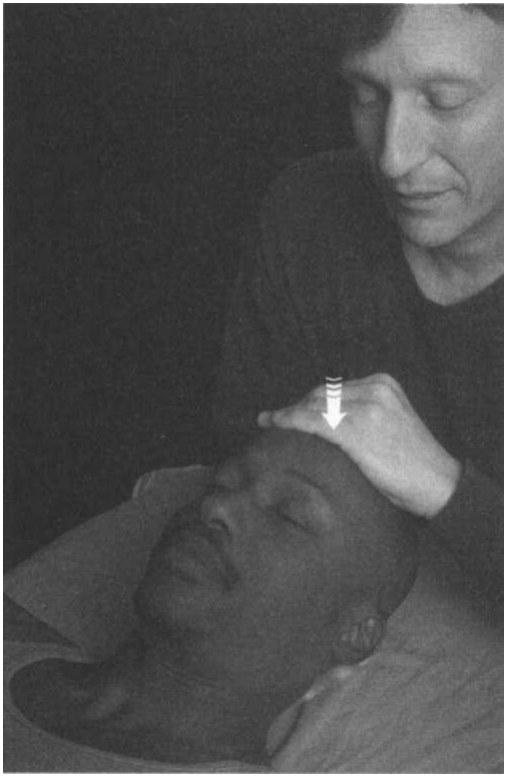
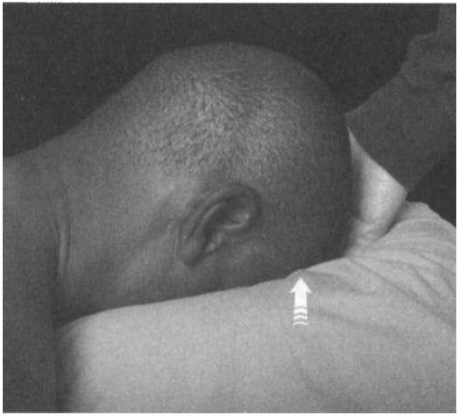
2 Liệu Pháp Thần Kinh – Cơ
CƠ ỨC – ĐÒN – CHŨM
MỘT BÊN (SCM)
Điểm bám SCM: Đỉnh xương ức, phần trong của xương đòn, và mỏm chũm
Tác dụng: Gập và xoay cổ
Cơ chính: Cổ
Cơ đối kháng: Cơ duỗi cổ
Cơ hiệp đồng: Cơ bụng, cơ thắt lưng lớn, cơ gập hông
CƠ DÀI CỔ
Điểm bám cơ dài cổ: C1 và C2 trước và C3–C7 trước
Tác dụng: Gập cổ
Cơ chính: Cổ
Cơ đối kháng: Cơ duỗi cổ
Cơ hiệp đồng: Cơ bụng, cơ thắt lưng lớn, cơ gập hông
Bài kiểm tra này giống như bài kiểm tra SCM hai bên, với đầu khách hàng xoay 45° sang một bên.
Áp lực được áp lên bên trán phía trên lông mày. Cẩn thận không ấn quá mạnh!
Đỡ đầu khách hàng cách bàn một hoặc hai inch bằng một tay. Yêu cầu khách hàng giữ đầu gật về trước, cằm thu vào, trong khi bạn nhẹ nhàng cố đẩy trán ra sau, như thể để hủy bỏ cúi đầu. Theo dõi việc khách hàng cố nâng cằm để chống lại (dùng SCM chứ không phải cơ dài cổ).


CƠ BẬC THANG GIỮA
Điểm bám: C3–C7 và các xương sườn trước #1–2
Tác dụng: Gập cổ và gập bên
Cơ chính: Cổ
Cơ đối kháng: Cơ duỗi cổ, cơ nâng bả vai
Cơ hiệp đồng: Cơ bụng, cơ thắt lưng lớn, cơ delta, cơ tam đầu, cơ cánh tay – quay, cơ duỗi cổ tay, cơ duỗi ngón cái
CƠ BẬC THANG TRƯỚC
Điểm bám: Giống như cơ bậc thang giữa (ở trên)
Tác dụng: Gập cổ và gập bên
Cơ chính: Cổ
Cơ đối kháng: Cơ duỗi cổ, cơ nâng bả vai
Cơ hiệp đồng: Cơ bụng, cơ thắt lưng lớn, cơ delta, cơ tam đầu, cơ cánh tay – quay, cơ duỗi cổ tay, cơ duỗi ngón cái
Cổ 3
Chống lại ở thái dương trong khi khách hàng hướng đầu về vai.
Chống lại phía trên lông mày trong khi khách hàng hướng đầu về phía vai.


4 Liệu Pháp Thần Kinh – Cơ
DUỖI CỔ
HAI BÊN
Nằm Ngửa và Nằm Sấp
Cơ chính: Cổ
Cơ đối kháng: Cơ gập cổ
Cơ hiệp đồng: Cơ dựng cột sống ngực, cơ dựng cột sống thắt lưng, cơ mông lớn hai bên
Với đầu khách hàng phẳng trên bàn, chống lại chuyển động duỗi cổ. Bài này kiểm tra các cơ duỗi cổ dưới.
Nâng đầu khách hàng vài inch khỏi bàn và chống lại chuyển động duỗi cổ. Bài này kiểm tra các cơ duỗi cổ trên.
Chống lại duỗi cổ (cho thấy toàn bộ chiều dài của các cơ duỗi cổ). Nếu đầu được nâng khỏi bàn, bài này kiểm tra sự duỗi ngực.
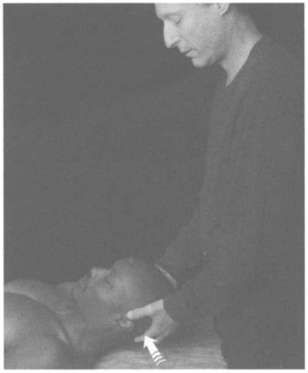

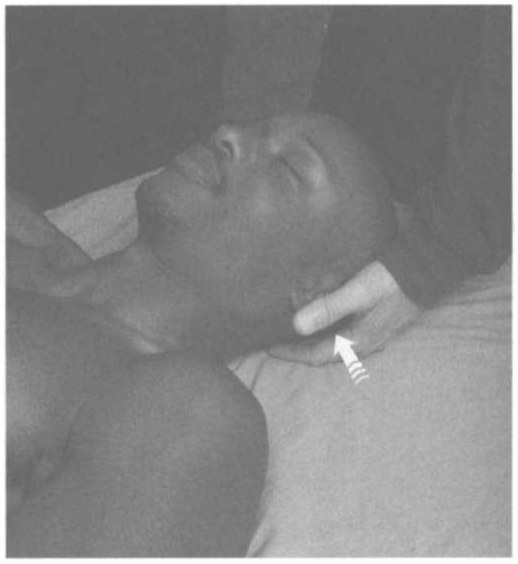
DUỖI CỔ
MỘT BÊN
Nằm Ngửa và Nằm Sấp
Xoay đầu hoàn toàn và chống lại chuyển động duỗi. Tư thế nằm sấp cho thấy toàn bộ chiều dài của các cơ duỗi lưng ở một bên.
XOAY CỘT SỐNG
CỔ
Nằm Ngửa
Cơ chính: Cổ
Cơ đối kháng: Xoay ngược chiều
Cơ hiệp đồng: Ngực đối bên, xoay thắt lưng cùng bên
Cổ 5
Cơ chính: Cổ
Cơ đối kháng: SCM
Cơ hiệp đồng: Cơ dựng cột sống ngực, cơ dựng cột sống thắt lưng, cơ mông lớn một bên
Chống lại phía trên tai trong khi khách hàng xoay đầu.
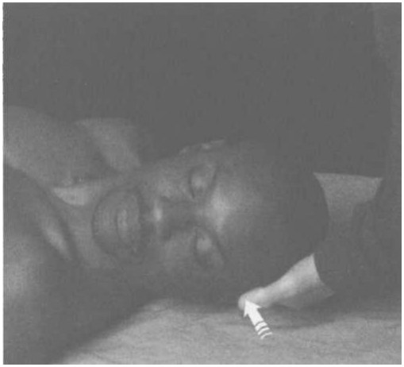


6 Liệu Pháp Thần Kinh – Cơ
CƠ THANG TRÊN
Nằm Ngửa và Nằm Sấp
Điểm bám: Xương chẩm, C1–C7 và phần ngoài của xương đòn, mỏm cùng vai
Tác dụng: Nâng và xoay lên của bả vai
Đầu thẳng. Chống lại gập bên cổ phía trên tai đồng thời chống lại sự nâng vai.
Cơ chính: Ngực trên, cổ
Cơ đối kháng: Cơ lưng rộng (Latissimus dorsi), cơ thang dưới
Cơ hiệp đồng: Cơ xiên, cơ vuông thắt lưng, cơ mông vừa, cơ căng mạc đùi
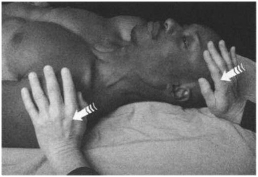

Hoạt Động Của Nhóm Cơ Vùng Cổ
CƠ GẬP CỔ
1. Điểm bám xương ức của SCM 2. Điểm bám xương đòn của SCM 3. Cơ bậc thang – A. Trước; B. Giữa;
C. Sau 4. Cơ dài cổ
Cổ 7
3A
3B
3C
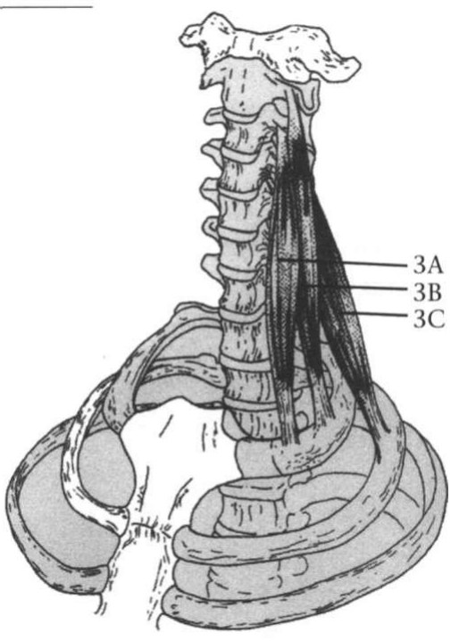

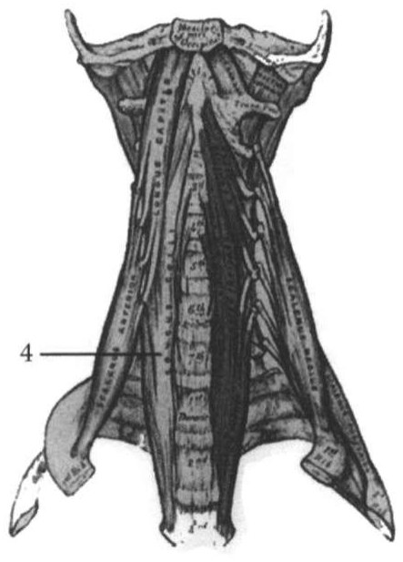
8 Liệu Pháp Thần Kinh – Cơ
CƠ DUỖI CỔ
1. Cơ lách đầu (Splenius capitis) 2. Cơ lách cổ (Splenius cervicis) 3. Cơ thang trên
Cơ dựng cột sống – xem Cơ duỗi thân trong tài liệu tham khảo giải phẫu ("Hoạt Động
Của Nhóm Cơ") ở cuối Chương III.


Chương II — Chi trên (Upper Extremities)
II. Chi Trên
CƠ THANG GIỮA
Nằm Ngửa và Nằm Sấp
Điểm bám: C7 đến T5 và gai của bả vai
Tác dụng: Kéo bả vai về sau
Cánh tay được giang 90°, khuỷu tay khóa. Đặt tay trên cẳng tay mặt sau phía trên cổ tay và chống lại chuyển động xuống dưới.
Cơ chính: Ngực
Cơ đối kháng: Cơ ngực lớn phần đòn, cơ ngực nhỏ, cơ răng trước
Cơ hiệp đồng: Cơ hình thoi, cơ delta sau, cơ tam đầu, cơ duỗi cổ tay
Cánh tay được giang 90°, khuỷu tay khóa. Đặt tay bạn trên cẳng tay mặt trước phía trên cổ tay để đỡ tay khách hàng. Đặt tay kia trên cẳng tay mặt sau phía trên cổ tay và nhẹ nhàng chống lại chuyển động lên trên!
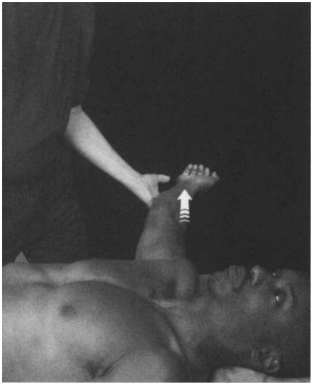
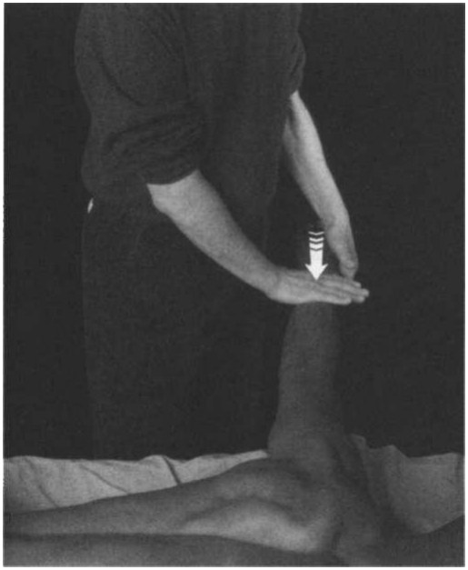
10 Liệu Pháp Thần Kinh – Cơ
CƠ THANG DƯỚI
Nằm Ngửa và Nằm Sấp
Điểm bám: T5-12 và gốc của gai của bả vai
Tác dụng: Hạ và xoay lên của bả vai
Cánh tay được giang 135° với khuỷu tay khóa
Đặt tay trên cẳng tay mặt sau phía trên cổ tay. Chống lại chuyển động xuống dưới.
Cơ chính: Ngực
Cơ đối kháng: Cơ ngực lớn phần ức, cơ thang trên, cơ nâng bả vai, cơ hình thoi, cơ ngực nhỏ
Cơ hiệp đồng: Cơ duỗi cổ tay, cơ tam đầu, cơ delta sau, cơ lưng rộng, cơ tròn nhỏ, cơ dưới gai
Cánh tay được giang 135°, khuỷu tay khóa. Đặt một tay trên cẳng tay mặt trước phía trên cổ tay để đỡ cánh tay, tay kia đặt trên cẳng tay mặt sau phía trên cổ tay.
Chống lại chuyển động lên trên nhẹ nhàng!


CƠ LƯNG RỘNG
Nằm Ngửa và Nằm Sấp
Tay Thẳng
Điểm bám: Xương cùng, mào chậu, T7-12, góc dưới của bả vai và rãnh nhị đầu
Tác dụng: Duỗi, xoay trong, và khép cánh tay
Cánh tay được khép và xoay trong sát thân, khuỷu tay khóa. Đặt tay trên mặt sau cẳng tay phía trên cổ tay. Chống lại chuyển động khép.
Chi Trên 11
Cơ chính: Ngực, thắt lưng
Cơ đối kháng: Cơ giang cánh tay, cơ xoay ngoài cánh tay, cơ gập cánh tay
Cơ hiệp đồng: Cơ khép cánh tay, cơ xoay trong cánh tay, cơ duỗi cánh tay

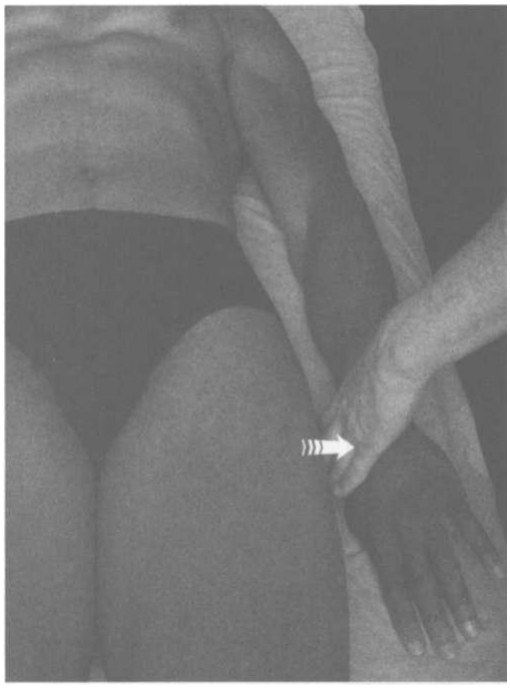
12 Liệu Pháp Thần Kinh – Cơ
CƠ LƯNG RỘNG
Tay Cong
Điểm bám: Góc dưới của bả vai và rãnh nhị đầu
Tác dụng: Hạ bả vai thông qua cánh tay
Cơ chính: Ngực
Cơ đối kháng: Cơ thang trên, cơ nâng bả vai
Cơ hiệp đồng: Cơ tròn lớn, cơ thang dưới, cơ tròn nhỏ
Chi tiết cơ lưng rộng
Cánh tay được giang 90°, khuỷu tay gập 90°, vai xoay ngoài. Chống lại chuyển động khép tại khuỷu tay.
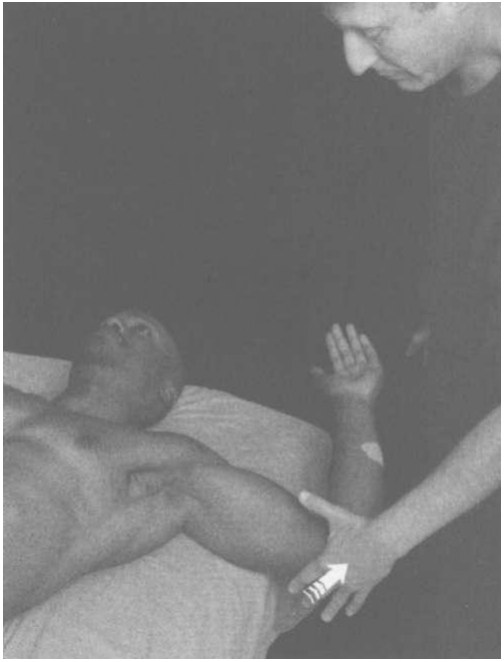
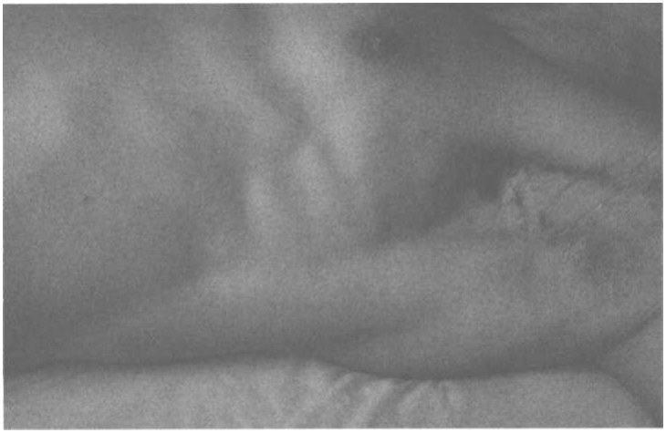
CƠ TRÒN LỚN
Nằm Ngửa và Nằm Sấp
Điểm bám: Góc dưới của bả vai và bờ trong của rãnh nhị đầu cánh tay
Tác dụng: Duỗi, xoay trong, và khép cánh tay
Gập khuỷu tay và đặt mu bàn tay khách hàng dưới lưng ở mức thắt lưng. Đặt tay bạn trên mặt trước của khuỷu tay. Chống lại chuyển động xuống dưới.
Chi Trên 13
Cơ chính: Ngực
Cơ đối kháng: Cơ gập cánh tay, cơ xoay ngoài, và cơ giang
Cơ hiệp đồng: Cơ lưng rộng và cơ duỗi cánh tay, cơ xoay trong, và cơ khép
Khuỷu tay gập, mu bàn tay đặt ở lưng dưới.
Đặt một tay trên khuỷu tay và tay kia trên lòng bàn tay. Chống lại chuyển động lên của khuỷu tay.
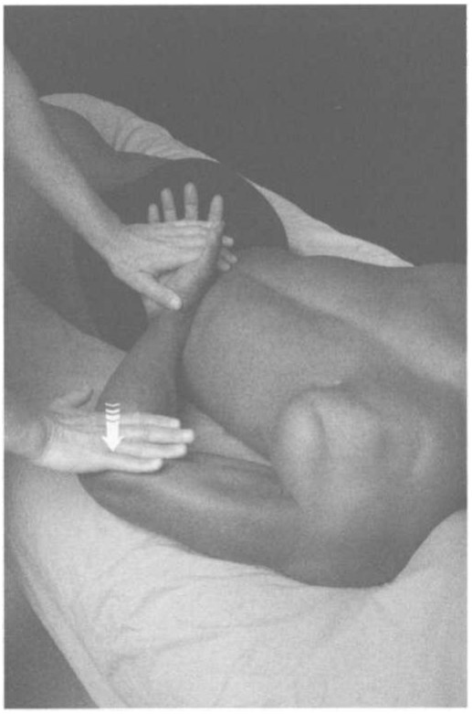

14 Liệu Pháp Thần Kinh – Cơ
CƠ NÂNG BẢ VAI
Nằm Ngửa và Nằm Sấp
Điểm bám: C1-4 và góc trong, trên của bả vai
Tác dụng: Nâng và xoay xuống của bả vai
Cơ chính: Ngực trên, cổ
Cơ đối kháng: Cơ bậc thang, cơ lưng rộng, cơ thang dưới
Cơ hiệp đồng: Cơ delta sau, cơ tam đầu, cơ vuông thắt lưng, cơ mông lớn
Khách hàng xoay đầu nhẹ sang một bên. Chống lại cúi nghiêng cổ phía trên tai bằng một tay, và chống lại sự nâng vai bằng tay kia.


CƠ HÌNH THOI
Nằm Ngửa và Nằm Sấp
Điểm bám: C7-T5 và bờ cột sống của bả vai
Tác dụng: Kéo về sau và xoay xuống của bả vai
Cơ chính: Cổ, ngực
Cơ đối kháng: Cơ ngực nhỏ, cơ răng trước
Cơ hiệp đồng: Cơ thang giữa, cơ lưng rộng, cơ vuông thắt lưng
Chi Trên 15
Cánh tay giang 45°, khuỷu tay gập 90°, lòng bàn tay hướng vào trong. Chống lại khép tại khuỷu tay.
Khuỷu tay gập và giang nhẹ. Chống lại chuyển động khép tại khuỷu tay.
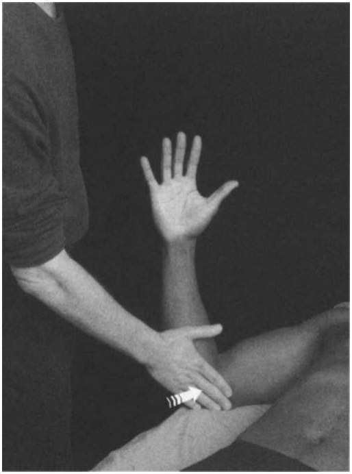

16 Liệu Pháp Thần Kinh – Cơ
CƠ DELTA, TRƯỚC
Nằm Ngửa và Nằm Sấp
Điểm bám: Một phần ba ngoài của xương đòn và củm xương delta
Tác dụng: Gập, khép ngang, xoay trong cánh tay
Chi tiết nhóm cơ delta
Giang cánh tay nhẹ. Đặt tay trên mặt sau cẳng tay phía trên cổ tay. Chống lại cúi cánh tay.
Cơ chính: Ngực
Cơ đối kháng: Cơ delta sau; cơ duỗi, cơ giang ngang, và cơ xoay ngoài cánh tay
Cơ hiệp đồng: Cơ duỗi cổ tay, cơ nhị đầu, cơ cánh tay – mỏ quạ, cơ ngực lớn và nhỏ, cơ dưới bả vai, cơ lưng rộng
Cánh tay giang 90° với khuỷu tay gập 90°.
Chống lại khép ngang bằng một tay trên phần dưới của cơ nhị đầu và tay kia nắm lấy tay khách hàng.
Khuỷu tay khách hàng gập 90°. Đặt tay bạn lên mặt dưới của cánh tay phía trên khuỷu tay.
Chống lại chuyển động xuống dưới của cánh tay.
**Tay trên được đặt phía trên khuỷu tay để ổn định.

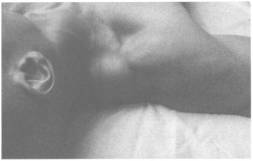

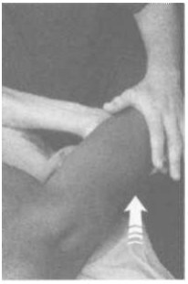
CƠ DELTA, GIỮA
Nằm Ngửa và Nằm Sấp
Điểm bám: Mỏm vai ngoài và củm xương delta
Tác dụng: Giang cánh tay đến 90°
Cánh tay được giang 90° với khuỷu tay gập 90°. Chống lại giang bằng tay phía trên khuỷu tay khách hàng và tay kia giữ cổ tay khách hàng.
Chi Trên 17
Cơ chính: Ngực
Cơ đối kháng: Cơ khép cánh tay
Cơ hiệp đồng: Cơ giang cánh tay
Khuỷu tay khách hàng gập 90°. Đặt tay bạn phía trên khuỷu tay và chống lại giang.
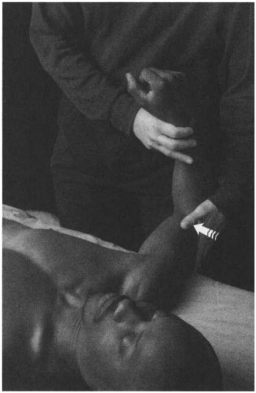
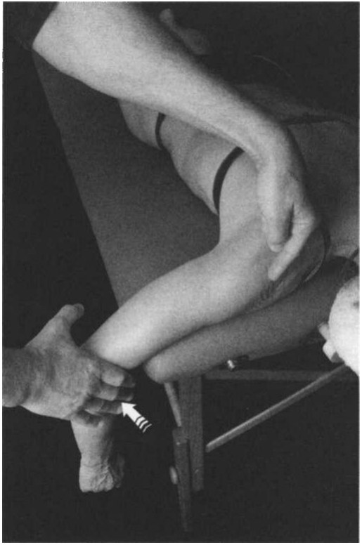
18 Liệu Pháp Thần Kinh – Cơ
CƠ DELTA, SAU
Nằm Ngửa và Nằm Sấp
Điểm bám: Mỏm vai ngoài và củm xương delta
Tác dụng: Duỗi, giang ngang, và xoay ngoài cánh tay
Cơ chính: Ngực
Cơ đối kháng: Cơ delta trước
Cơ hiệp đồng: Cơ tam đầu, cơ thang trên
Khuỷu tay khách hàng gập 90°. Đặt tay bạn trên cánh tay phía trên khuỷu tay. Chống lại chuyển động xuống dưới.
Khuỷu tay gập, cánh tay giang 90°. Đỡ tay khách hàng trong khi đặt tay kia phía trên khuỷu tay. Chống lại chuyển động lên trên.

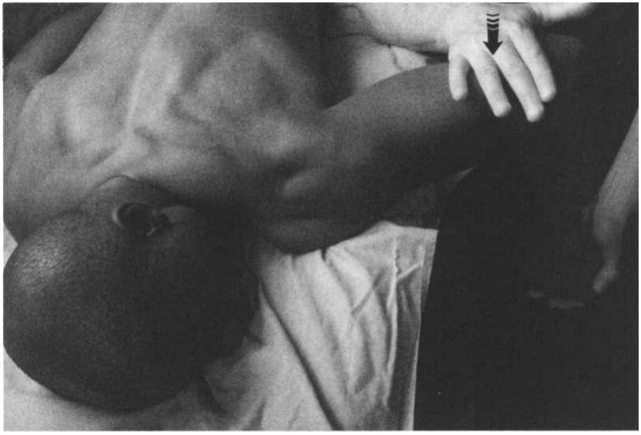
CƠ CÁNH TAY – MỎ QUẠ
Nằm Ngửa
Điểm bám: Mỏm quạ và một phần ba giữa của mặt trong của thân xương cánh tay
Tác dụng: Gập và khép cánh tay
Cơ chính: Ngực
Cơ đối kháng: Cơ duỗi cánh tay và cơ giang
Cơ hiệp đồng: Cơ nhị đầu, cơ delta trước, cơ ngực lớn, cơ khép cánh tay
Chi Trên 19
Cánh tay được giang nhẹ, khuỷu tay gập 90°.
Đặt tay trên cánh tay phía trên khuỷu tay trong khi nắm tay khách hàng. Chống lại gập.
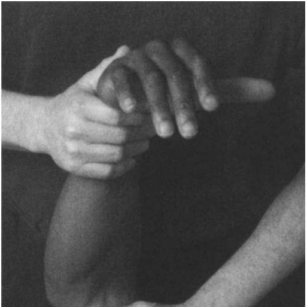
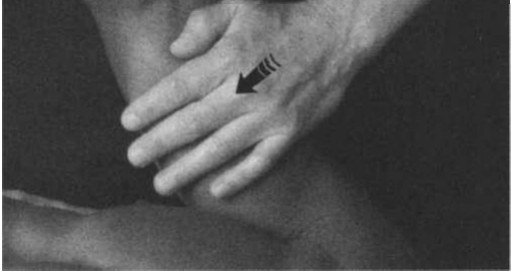
20 Liệu Pháp Thần Kinh – Cơ
CƠ TRÒN NHỎ
Nằm Ngửa và Nằm Sấp
Điểm bám: Bờ nách trên của bả vai và củ lớn của xương cánh tay
Tác dụng: Xoay ngoài cánh tay
Cơ chính: Ngực
Cơ đối kháng: Cơ dưới bả vai
Cơ hiệp đồng: Cơ delta sau, cơ tam đầu, cơ dưới gai, cơ lưng rộng, cơ duỗi cổ tay
Khuỷu tay gập 90° và cánh tay giang 45°
Chống lại xoay ngoài bằng tay phía trên cổ tay khách hàng trong khi ổn định phía đối diện của khuỷu tay.
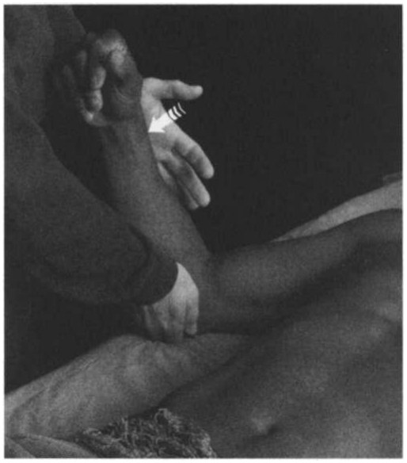
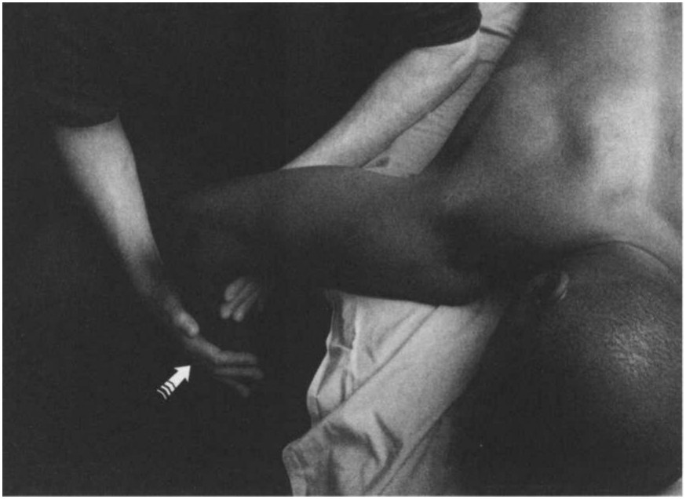
CƠ DƯỚI GAI
Nằm Ngửa và Nằm Sấp
Điểm bám: Hố dưới gai của bả vai và củ lớn của xương cánh tay
Tác dụng: Xoay ngoài cánh tay
Khuỷu tay gập 90°. Cánh tay cũng giang 90°
Chống lại xoay ngoài bằng tay phía trên cổ tay khách hàng trong khi ổn định phía đối diện của khuỷu tay.
Chi Trên 21
Cơ chính: Ngực
Cơ đối kháng: Cơ dưới bả vai
Cơ hiệp đồng: Cơ delta sau, cơ tam đầu, cơ tròn nhỏ, cơ lưng rộng, cơ duỗi cổ tay
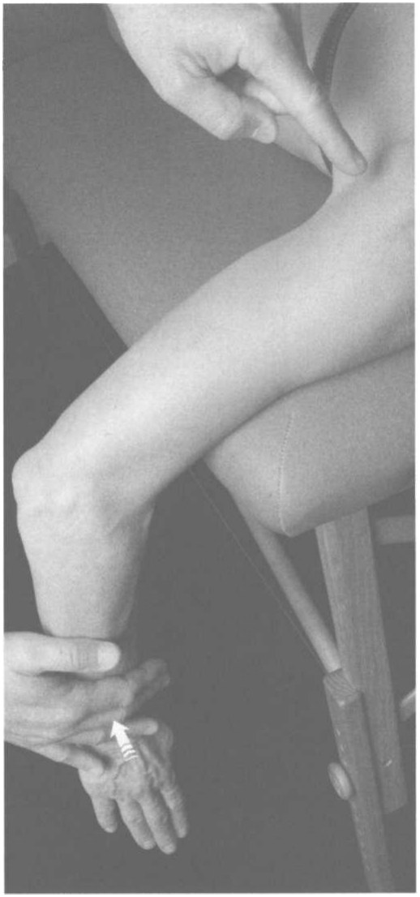

22 Liệu Pháp Thần Kinh – Cơ
CƠ TRÊN GAI
Nằm Ngửa và Nằm Sấp
Điểm bám: Hố trên gai của bả vai và củ lớn của xương cánh tay
Tác dụng: Giang cánh tay
Cơ chính: Ngực
Cơ đối kháng: Cơ khép cánh tay
Cơ hiệp đồng: Cơ delta giữa, cơ duỗi cổ tay, và cơ giang cánh tay
Cánh tay sát thân, khuỷu tay khóa. Chống lại 15° đầu tiên của chuyển động giang.
Cánh tay được giang 10-15° và nâng nhẹ khỏi bàn. Chống lại giang phía trên cổ tay.
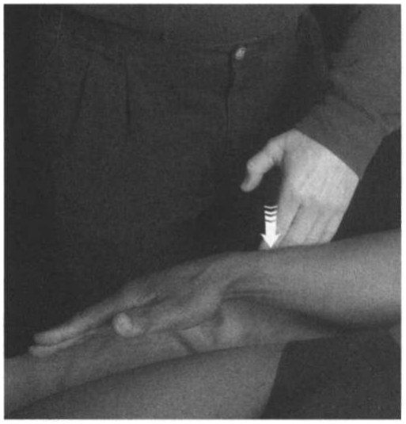

CƠ DƯỚI BẢ VAI
Nằm Ngửa và Nằm Sấp
Điểm bám: Hố dưới bả vai của xương bả vai và củ nhỏ của xương cánh tay
Tác dụng: Xoay trong cánh tay
Cánh tay được giang giữa 45 và 90°
Chống lại xoay trong bằng tay phía trên cổ tay khách hàng trong khi ổn định phía đối diện của khuỷu tay.
Chi Trên 23
Cơ chính: Ngực
Cơ đối kháng: Cơ dưới gai, cơ tròn nhỏ, cơ xoay ngoài cánh tay
Cơ hiệp đồng: Cơ gập cổ tay, cơ xoay trong cánh tay
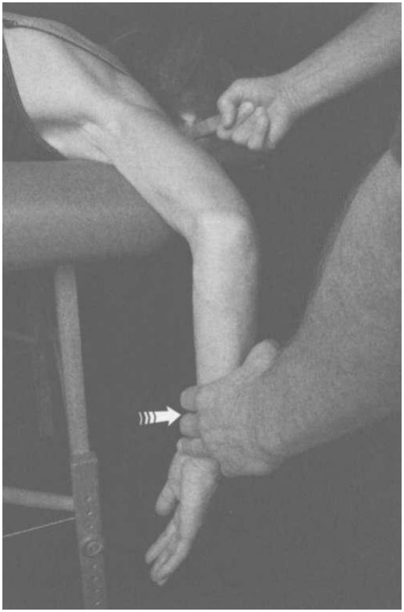
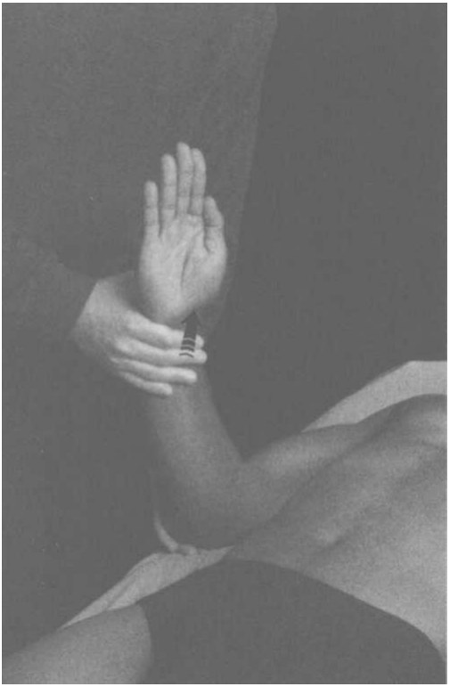
24 Liệu Pháp Thần Kinh – Cơ
CƠ NGỰC LỚN
PHẦN ĐÒN
Nằm Ngửa và Nằm Sấp
Điểm bám: Nửa trong của xương đòn và rãnh nhị đầu
Cơ chính: Ngực
Cơ đối kháng: Cơ duỗi, cơ giang, cơ giang ngang, và cơ xoay ngoài cánh tay
Cơ hiệp đồng: Cơ gập, cơ khép, cơ khép ngang, và cơ xoay trong của cánh tay
Chi tiết cơ ngực lớn phần đòn
Lòng bàn tay khách hàng hướng về bạn. Hướng mu bàn tay về phía vai đối bên. Chống lại tại cổ tay.
Lòng bàn tay khách hàng hướng xuống sàn. Chống lại chuyển động xuống tại cổ tay.
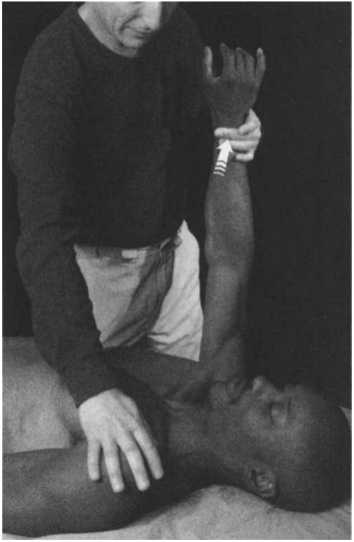

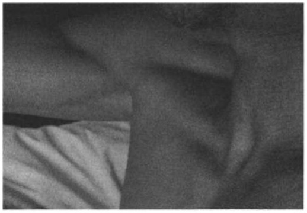
CƠ NGỰC LỚN
PHẦN ĐÒN
Nằm Ngửa và Nằm Sấp
Điểm bám: Sụn ức của các xương sườn I–6 và rãnh nhị đầu
Tác dụng: Khép, khép ngang, xoay trong cánh tay, duỗi cánh tay từ tư thế gập
Cơ chính: Ngực
Cơ đối kháng: Cơ thang dưới và giữa, cơ trám, cơ delta giữa, cơ delta sau
Cơ hiệp đồng: Cơ xiên trong đối bên, cơ nhị đầu, cơ lưng rộng
Chi tiết cơ ngực lớn phần đòn
Chi Trên 25
Khách hàng hướng ngón cái về hông đối bên với khuỷu tay khóa. Kéo nhẹ cánh tay. Ổn định hông đối bên. Chống lại tại cổ tay.
Cánh tay giang 135°. Đặt tay phía trên cổ tay. Chống lại chuyển động xuống.
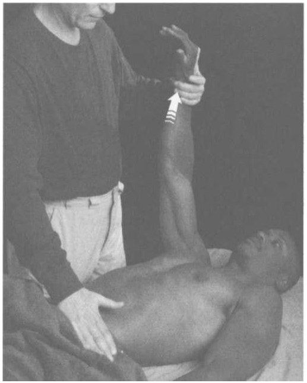
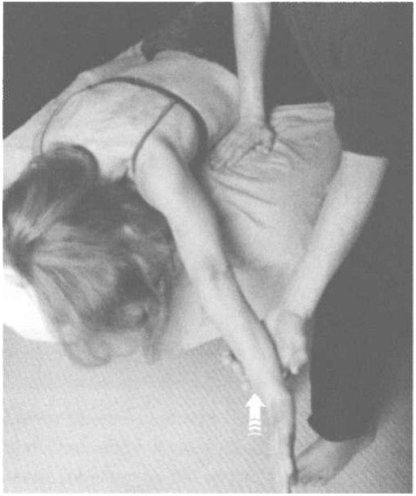

26 Liệu Pháp Thần Kinh – Cơ
CƠ NGỰC NHỎ
Nằm Ngửa
Điểm bám: Các xương sườn 3–5 và mỏm quạ
Tác dụng: Đưa ra trước, hạ, và xoay bả vai xuống
Cơ chính: Ngực
Cơ đối kháng: Các cơ kéo về sau, cơ nâng, và các cơ xoay bả vai lên
Cơ hiệp đồng: Các cơ gập hông đối bên, các cơ đưa ra trước, các cơ hạ, và các cơ xoay bả vai xuống
Bài kiểm tra chống đẩy chức năng
Cơ chính: Ngực
Cơ đối kháng: Cơ trám và cơ thang giữa
Cơ hiệp đồng: Cơ ngực lớn và nhỏ, cơ nhị đầu, cơ delta trước, cơ duỗi và gập cổ tay
Khách hàng nâng vai khỏi bàn. Chống lại sự đưa ra trước trên bầu khớp vai.
Cánh tay giang 90°, khuỷu tay gập. Đặt tay dưới nắm tay khách hàng (hoặc bàn tay mở). Chống lại chuyển động xuống của khách hàng. Bài này kiểm tra cơ ngực nhỏ và cơ ngực lớn.

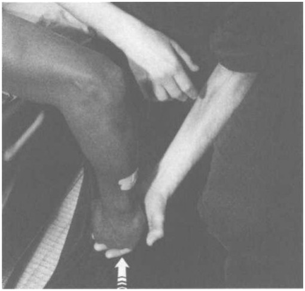
CƠ RĂNG CƯA TRƯỚC
Nằm Ngửa
Điểm bám: Mặt ngoài của tám xương sườn trên và mặt trước của bờ cột sống của bả vai
Tác dụng: Đưa ra trước và xoay bả vai lên; ổn định bả vai so với thành ngực
Thớ trên — Cánh tay gập 90° và giang nhẹ, khuỷu tay khóa. Chống lại chuyển động về phía đuôi phía trên cổ tay.
Chi Trên 27
Cơ chính: Ngực
Cơ đối kháng: Các cơ trám, cơ thang giữa, các cơ xoay bả vai xuống
Cơ hiệp đồng: Các cơ xoay bả vai lên, các cơ đưa bả vai ra trước
Thớ dưới — Cánh tay gập 90° và giang nhẹ, khuỷu tay khóa. Chống lại chuyển động về phía đầu phía trên cổ tay.
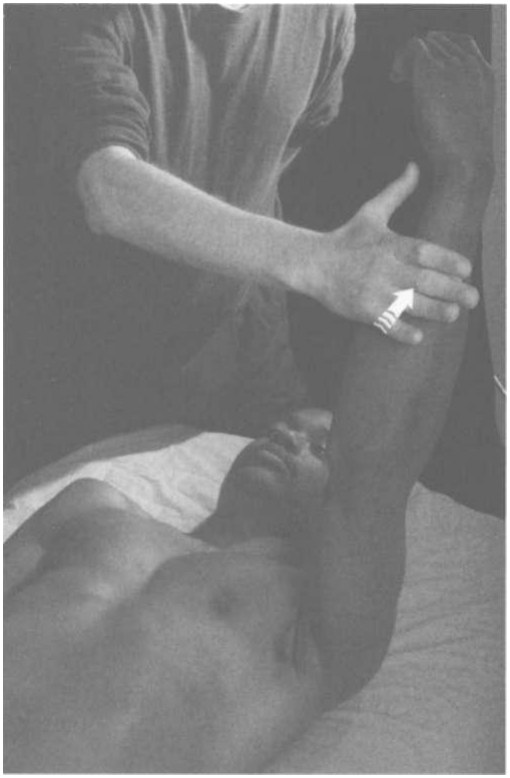

28 Liệu Pháp Thần Kinh – Cơ
CƠ NHỊ ĐẦU, ĐẦU DÀI
Nằm Ngửa và Nằm Sấp
Điểm bám: Củ trên ổ của bả vai và củ của xương quay
Tác dụng: Gập cánh tay, xoay ngửa cẳng tay, giang cánh tay
Cơ chính: Ngực
Cơ đối kháng: Cơ tam đầu, cơ tròn sấp, các cơ khép cánh tay
Cơ hiệp đồng: Cơ delta trước, cơ delta giữa, cơ ngực lớn, cơ trên gai, cơ xoay ngửa
Chi tiết cơ nhị đầu
Cánh tay giang 45°. Chống lại gập khuỷu tay phía trên cổ tay.
Khuỷu tay khách hàng gập 90°. Nắm cẳng tay phía trên khuỷu tay. Chống lại chuyển động đưa tay về vai
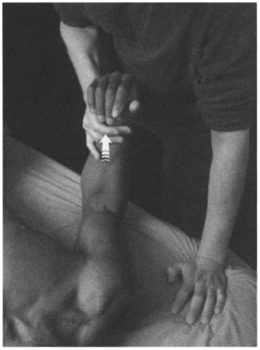

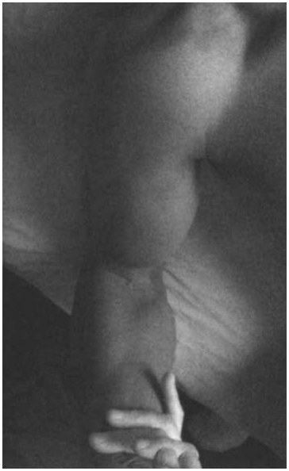
CƠ NHỊ ĐẦU, ĐẦU NGẮN
Nằm Ngửa
Điểm bám: Mỏm quạ và củ của xương quay
Tác dụng: Gập cánh tay, gập khuỷu tay, xoay ngửa cẳng tay, khép cánh tay
Cơ chính: Ngực
Cơ đối kháng: Cơ tam đầu, các cơ duỗi cánh tay, các cơ giang cánh tay, cơ tròn sấp
Cơ hiệp đồng: Cơ cánh tay – mỏ quạ, cơ ngực lớn và nhỏ, cơ delta trước, cơ xoay ngửa
CƠ CÁNH TAY
Nằm Ngửa
Điểm bám: Nửa dưới của thân trước của xương cánh tay và củ của xương trụ, mỏm vẹt của xương trụ
Tác dụng: Gập khuỷu tay
Chi Trên 29
Cánh tay khép, khuỷu tay gập 90°. Chống lại gập khuỷu tay phía trên cổ tay.
Cánh tay giang, khuỷu tay gập 90°, ngón cái hướng về đầu khách hàng. Chống lại gập phía trên cổ tay.
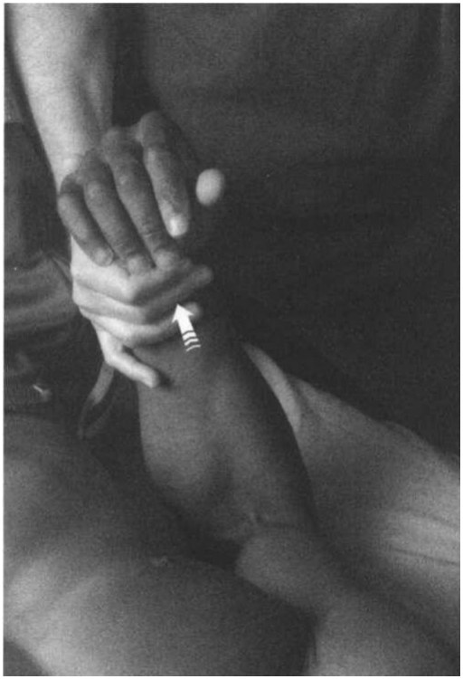
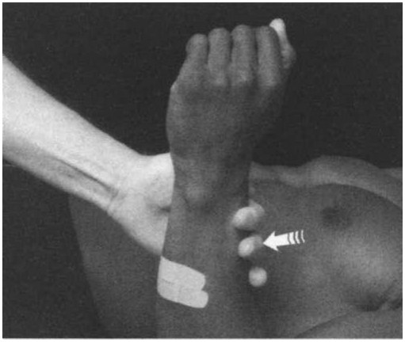
30 Liệu Pháp Thần Kinh – Cơ
CƠ TAM ĐẦU, ĐẦU DÀI
Nằm Ngửa và Nằm Sấp
Điểm bám: Củ dưới ổ của bả vai và mỏm khuỷu
Tác dụng: Duỗi cánh tay, duỗi khuỷu tay
Cơ chính: Ngực
Cơ đối kháng: Các cơ gập cánh tay và các cơ gập khuỷu tay
Cơ hiệp đồng: Các cơ duỗi cánh tay, các cơ duỗi khuỷu tay
CƠ TAM ĐẦU, ĐẦU TRONG
Nằm Ngửa
Điểm bám: Mặt sau xương cánh tay và mỏm khuỷu
Tác dụng: Duỗi khuỷu tay
Cơ chính: Ngực
Cơ đối kháng: Cơ nhị đầu, cơ cánh tay
Cơ hiệp đồng: Cơ delta sau, cơ lưng rộng, cơ tròn nhỏ, cơ dưới gai
Cánh tay khép, lòng bàn tay hướng lên, khuỷu tay khóa.
Chống lại duỗi bằng tay phía trên cổ tay khách hàng.
Cánh tay khách hàng duỗi thẳng sát thân. Nhấc nhẹ khỏi bàn. Đặt tay của bạn lên cẳng tay khách hàng phía trên cổ tay. Chống lại chuyển động lên.
Cánh tay giang nhẹ với khuỷu tay gập 90°. Chống lại duỗi bằng tay phía trên cổ tay.

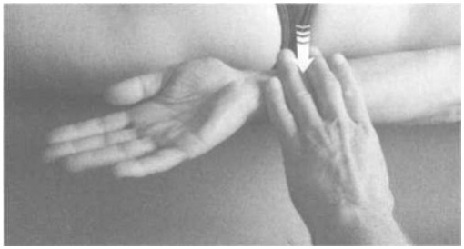
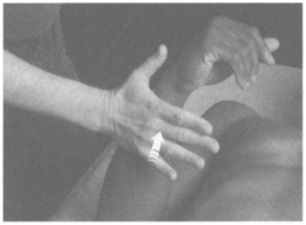
CƠ TAM ĐẦU, ĐẦU NGOÀI
Nằm Ngửa và Nằm Sấp
Điểm bám: Mặt sau xương cánh tay và mỏm khuỷu
Tác dụng: Duỗi khuỷu tay
Cơ chính: Ngực
Cơ đối kháng: Đầu dài của cơ nhị đầu, cơ cánh tay
Cơ hiệp đồng: Cơ delta sau, cơ lưng rộng, cơ tròn nhỏ, cơ dưới gai
CƠ CÁNH TAY – QUAY
Điểm bám: Mặt ngoài đầu dưới của xương cánh tay và mỏm trâm của xương quay
Tác dụng: Gập khuỷu tay trong tư thế trung lập
Cơ chính: Ngực
Cơ đối kháng: Cơ tam đầu
Cơ hiệp đồng: Cơ duỗi ngón cái dài, cơ duỗi cổ tay quay, cơ nhị đầu, cơ cánh tay, cơ delta trước, cơ thang trên, các cơ bậc thang
Chi Trên 31
Cánh tay giang với khuỷu tay gập 90°. Chống lại duỗi bằng tay phía trên cổ tay.
Cánh tay giang 45° với khuỷu tay gập 90°. Chống lại gập khuỷu tay ở đế ngón cái.
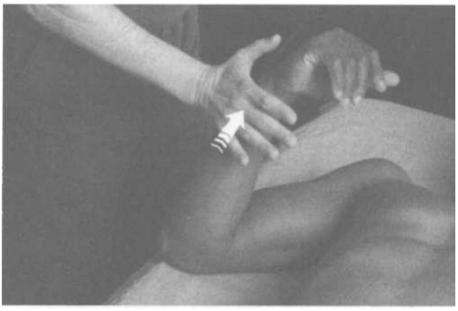
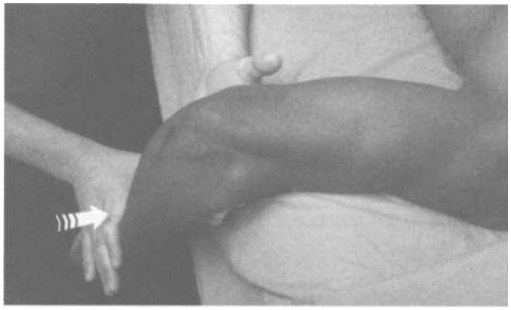
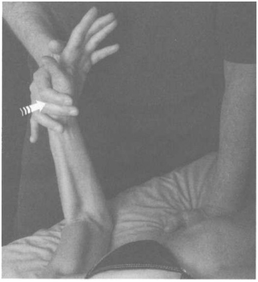
32 Liệu Pháp Thần Kinh – Cơ
GẬP
CÁNH TAY
Cơ chính: Ngực
Cơ đối kháng: Các cơ duỗi cánh tay
Cơ hiệp đồng: Các cơ gập cánh tay
DUỖI
CÁNH TAY
Cơ chính: Ngực
Cơ đối kháng: Các cơ gập cánh tay
Cơ hiệp đồng: Các cơ duỗi cánh tay
Cánh tay gập 90°, khuỷu tay khóa. Chống lại gập phía dưới khuỷu tay trong khi nắm cổ tay.
Cánh tay gập 90°, khuỷu tay khóa. Chống lại duỗi phía trên cổ tay.
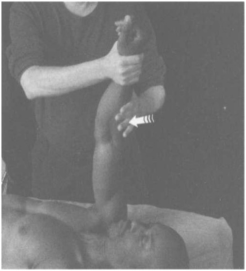
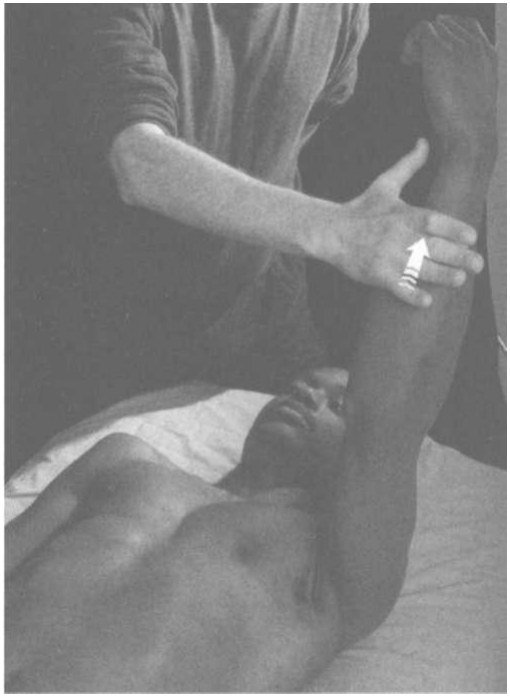
GIANG
CÁNH TAY
Cơ chính: Ngực
Cơ đối kháng: Các cơ khép cánh tay
Cơ hiệp đồng: Các cơ giang cánh tay
KHÉP
CÁNH TAY
Cơ chính: Ngực
Cơ đối kháng: Các cơ giang cánh tay
Cơ hiệp đồng: Các cơ khép cánh tay
Chi Trên 33
Cánh tay giang 20–30°. Chống lại giang phía trên cổ tay.
Cánh tay khách hàng thẳng, khuỷu tay khóa. Chống lại khép phía trên cổ tay.

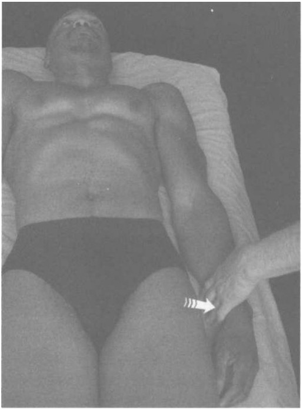
34 Liệu Pháp Thần Kinh – Cơ
NGANG
KHÉP
CÁNH TAY
Cơ chính: Ngực
Cơ đối kháng: Các cơ giang ngang
Cơ hiệp đồng: Các cơ khép ngang
NGANG
GIANG
CÁNH TAY
Cơ chính: Ngực
Cơ đối kháng: Các cơ khép ngang
Cơ hiệp đồng: Các cơ giang ngang
Cánh tay gập 90°, khuỷu tay khóa. Chống lại khép ngang phía trên cổ tay.
Cánh tay gập 90°, khuỷu tay khóa. Chống lại giang ngang phía trên cổ tay.


CƠ TRÒN SẤP
Điểm bám: Mỏm lên trong của xương cánh tay và giữa thân ngoài của xương quay
Tác dụng: Xoay sấp cẳng tay
Cơ chính: Ngực
Cơ đối kháng: Cơ xoay ngửa, cơ nhị đầu
Cơ hiệp đồng: Cơ vuông sấp, các cơ xoay trong của vai
CƠ XOAY NGỬA
Điểm bám: Mỏm lên ngoài của xương cánh tay và mặt ngoài của một phần ba trên của xương quay
Tác dụng: Xoay ngửa cẳng tay
Cơ chính: Ngực
Cơ đối kháng: Cơ tròn sấp
Cơ hiệp đồng: Cơ xoay ngửa, cơ nhị đầu, các cơ xoay ngoài của vai
Chi Trên 35
Với khuỷu tay khách hàng gập, nắm ngón cái của anh ấy bằng một tay và đặt mu bàn tay kia lên mu bàn tay khách hàng.
Chống lại xoay sấp bằng cả hai tay.
Khuỷu tay khách hàng gập. Đặt một tay sau ngón cái và ngón trỏ của anh ấy và tay kia lên ụ ngón út.
Chống lại xoay ngửa bằng cả hai tay. Điều này cũng kiểm tra tác dụng xoay ngửa của cơ nhị đầu. Khi cần tốc độ hoặc lực cản lớn hơn, cơ nhị đầu chiếm ưu thế.


36 Liệu Pháp Thần Kinh – Cơ
CƠ GẬP CỔ TAY
QUAY
Điểm bám: Mỏm lên trong của xương cánh tay và đế của xương bàn tay thứ hai và thứ ba
Tác dụng: Gập và giang cổ tay (lệch quay)
Cơ chính: Ngực
Cơ đối kháng: Cơ duỗi cổ tay quay (gập), các cơ khép cổ tay
Cơ hiệp đồng: Cơ gập cổ tay trụ, cơ gập ngón (cả hai), cơ cánh tay, cơ nhị đầu, cơ cánh tay – mỏ quạ, cơ delta trước, cơ thang trên, cơ bậc thang, cơ duỗi cổ tay quay (giang)
Cổ tay khách hàng gập 45°. Đặt tay của bạn lên mặt trong cổ tay thẳng hàng với ngón cái
Chống lại gập.
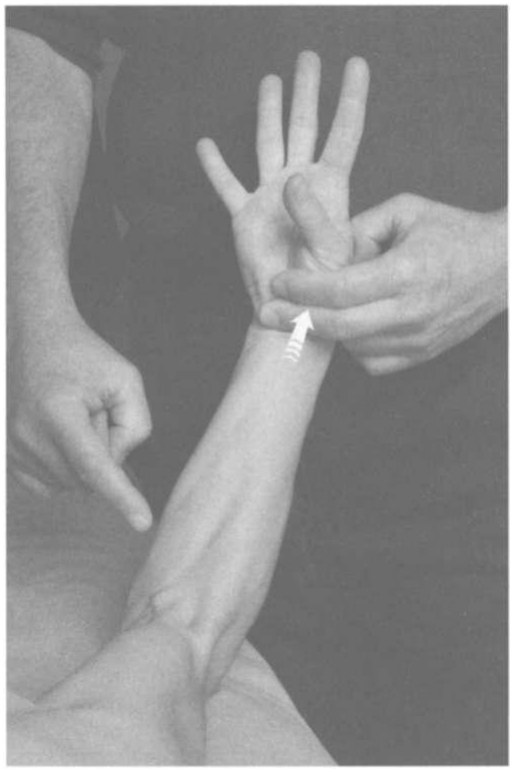
CƠ DUỖI CỔ TAY
QUAY DÀI
Điểm bám: Bờ trên mỏm lên ngoài, mỏm lên ngoài của xương cánh tay và đế của xương bàn tay thứ hai
Tác dụng: Duỗi, giang cổ tay (lệch quay)
CƠ DUỖI CỔ TAY
QUAY NGẮN
Điểm bám: Mỏm lên ngoài của xương cánh tay (gân duỗi chung) và đế của xương bàn tay thứ ba
Tác dụng: Duỗi cổ tay
Chi Trên 37
Cơ chính: Ngực
Cơ đối kháng: Cơ gập cổ tay quay (duỗi), các cơ khép cổ tay
Cơ hiệp đồng: Cơ duỗi cổ tay trụ, cơ duỗi ngón, cơ cánh tay – quay, cơ tam đầu, cơ delta sau, cơ thang trên, cơ nâng bả vai, các cơ bậc thang, cơ gập cổ tay quay (giang)
Cổ tay khách hàng duỗi 45°. Đặt tay của bạn lên mặt trong cổ tay thẳng hàng với ngón cái. Chống lại duỗi.
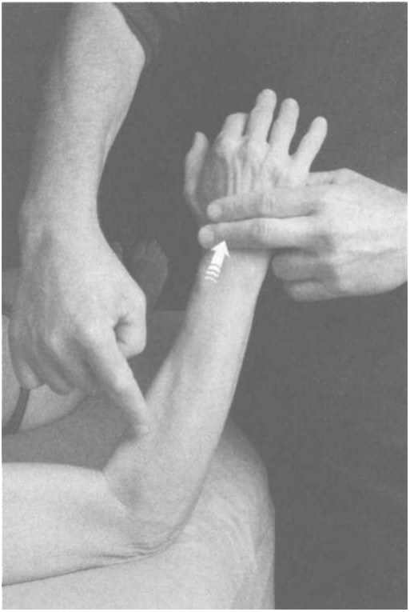
38 Liệu Pháp Thần Kinh – Cơ
CƠ GẬP CỔ TAY
TRỤ
Điểm bám: Đầu cánh tay Mỏm lên trong của xương cánh tay và xương đậu, xương móc, đế của xương bàn tay thứ năm
Đầu trụ — Mặt sau trên của xương trụ, mỏm khuỷu của xương trụ và xương đậu, xương móc, đế của xương bàn tay thứ năm
Tác dụng: Gập, khép cổ tay (lệch trụ)
Cơ chính: Ngực
Cơ đối kháng: Cơ duỗi cổ tay quay (gập), các cơ giang cổ tay
Cơ hiệp đồng: Cơ gập cổ tay quay, cơ gập ngón (cả hai), cơ cánh tay, cơ nhị đầu, cơ cánh tay – mỏ quạ, cơ delta trước, cơ thang trên, cơ bậc thang, cơ duỗi cổ tay trụ (khép)
Cổ tay khách hàng gập 45°. Đặt tay của bạn lên mặt trong cổ tay thẳng hàng với ngón cái.
Chống lại gập.
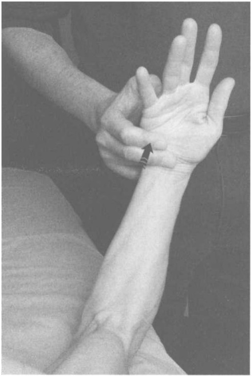
CƠ DUỖI CỔ TAY
TRỤ
Điểm bám: Mỏm lên ngoài của xương cánh tay (gân duỗi chung) và đế của xương bàn tay thứ năm
Tác dụng: Duỗi, khép cổ tay (lệch trụ)
Cơ chính: Ngực
Cơ đối kháng: Cơ gập cổ tay trụ (gập), các cơ giang cổ tay
Cơ hiệp đồng: Cơ duỗi cổ tay quay, cơ duỗi ngón, cơ cánh tay – quay, cơ tam đầu, cơ delta sau, cơ nâng bả vai, cơ thang trên, các cơ bậc thang, cơ gập cổ tay trụ (khép)
Chi Trên 39
Cổ tay khách hàng duỗi 45°. Đặt tay của bạn ngay dưới cổ tay thẳng hàng với ngón út. Chống lại duỗi.

40 Liệu Pháp Thần Kinh – Cơ
GẬP
CỔ TAY
Cơ chính: Ngực, cổ
Cơ đối kháng: Cơ duỗi cổ tay
Cơ hiệp đồng: Cơ gập cổ tay quay, cơ gập cổ tay trụ, cơ gập ngón (cả hai), cơ cánh tay, cơ nhị đầu cánh tay, cơ delta trước
DUỖI
CỔ TAY
Cơ chính: Ngực, cổ
Cơ đối kháng: Cơ gập cổ tay
Cơ hiệp đồng: Cơ duỗi cổ tay quay, cơ duỗi cổ tay trụ, cơ duỗi ngón, cơ cánh tay – quay, cơ tam đầu cánh tay, cơ delta sau
Khách hàng gập khuỷu tay 90°, cổ tay duỗi. Đặt lòng bàn tay của bạn lên lòng bàn tay khách hàng. Giữ ổn định cổ tay bằng tay kia của bạn. Chống lại chuyển động gập.
Gập khuỷu tay 90°, cổ tay gập. Đặt tay của bạn lên mu bàn tay của khách hàng. Giữ ổn định cổ tay bằng tay kia của bạn. Chống lại chuyển động duỗi.


GIANG
CỔ TAY
Cơ chính: Ngực, cổ
Cơ đối kháng: Cơ khép cổ tay
Cơ hiệp đồng: Cơ gập và duỗi cổ tay quay, cơ khép cánh tay
KHÉP
CỔ TAY
Cơ chính: Ngực, cổ
Cơ đối kháng: Cơ giang cổ tay
Cơ hiệp đồng: Cơ gập và duỗi cổ tay trụ, cơ giang cánh tay
Chi trên 41
Gập khuỷu tay 90°; cổ tay hơi khép. Đặt tay của bạn dưới ngón cái khách hàng trên cổ tay trong khi tay kia giữ ổn định cổ tay. Chống lại chuyển động giang.
Gập khuỷu tay 90°; cổ tay hơi khép. Nắm bên ngoài bàn tay khách hàng trong khi giữ ổn định cổ tay bằng tay kia của bạn. Chống lại chuyển động khép.

42 Liệu Pháp Thần Kinh – Cơ
CƠ GẬP NGÓN
NÔNG
Điểm bám: Đầu cánh tay – Mép trong xương cánh tay và Hai bên thân các đốt giữa của bốn ngón tay
Đầu trụ – Mỏ quạ của xương trụ và Hai bên thân các đốt giữa của bốn ngón tay
Đầu quay – Đường chéo trước của xương quay và Hai bên thân các đốt giữa của bốn ngón tay
Chức năng: Gập các đốt giữa của bốn ngón tay tại khớp liên đốt gần (PIP – proximal interphalangeal); hỗ trợ gập cổ tay
Cơ chính: Ngực
Cơ đối kháng: Cơ duỗi ngón
Cơ hiệp đồng: Cơ gập ngón sâu, cơ gập cổ tay quay; và cơ gập cổ tay trụ, cơ cánh tay, cơ nhị đầu cánh tay, cơ cánh tay – mỏ quạ, cơ delta trước, cơ thang trên, cơ bậc thang
Cổ tay khách hàng gập 45°. Đặt các ngón tay của bạn lên từng khớp PIP của các ngón tay từ hai đến năm. Chống lại chuyển động gập.
CƠ GẬP NGÓN
SÂU
Điểm bám: Giữa xương trụ trước, màng liên cốt và Đáy của các đốt xa của bốn ngón tay
Chức năng: Gập các đốt xa của bốn ngón tay tại khớp DIP (liên đốt xa) hỗ trợ gập cổ tay
Cơ chính: Ngực
Cơ đối kháng: Cơ duỗi ngón
Cơ hiệp đồng: Cơ gập ngón nông, cơ gập cổ tay quay và trụ, cơ cánh tay, cơ nhị đầu, cơ cánh tay – mỏ quạ, cơ delta trước, cơ thang trên, cơ bậc thang
Chi trên 43
Cổ tay khách hàng gập 45°. Đặt các ngón tay của bạn lên từng khớp DIP của các ngón tay từ hai đến năm. Chống lại chuyển động gập.

44 Liệu Pháp Thần Kinh – Cơ
CƠ DUỖI
NGÓN
Điểm bám: Mép ngoài của xương cánh tay (gân duỗi chung) và
Mạc duỗi của bốn ngón tay
Chức năng: Duỗi các đốt gần của bốn ngón tay tại khớp MP (bàn ngón); hỗ trợ duỗi cổ tay
Cơ chính: Ngực
Cơ đối kháng: Cơ gập ngón nông và sâu
Cơ hiệp đồng: Cơ duỗi cổ tay quay và trụ, cơ cánh tay – quay, cơ tam đầu cánh tay, cơ delta sau, cơ nâng bả vai, cơ thang trên, các cơ bậc thang
Cổ tay khách hàng duỗi 45°. Đặt các ngón tay của bạn lên mu bàn tay từ ngón trỏ đến ngón út
Chống lại chuyển động duỗi.
CƠ GẬP NGÓN CÁI
DÀI
Điểm bám: Xương quay trước, màng liên cốt và Đốt xa của ngón cái
Chức năng: Gập đốt xa của ngón cái
Cơ chính: Ngực
Cơ đối kháng: Cơ duỗi ngón cái dài
Cơ hiệp đồng: Cơ gập cổ tay quay, cơ cánh tay, cơ nhị đầu cánh tay, cơ delta trước, cơ thang trên, cơ bậc thang
CƠ DUỖI NGÓN CÁI
DÀI
Điểm bám: Xương trụ sau, màng liên cốt và Đáy của đốt xa của ngón cái
Chức năng: Duỗi đốt xa của ngón cái
Cơ chính: Ngực
Cơ đối kháng: Cơ gập ngón cái dài
Cơ hiệp đồng: Cơ duỗi cổ tay quay, cơ cánh tay – quay, cơ tam đầu cánh tay, cơ delta sau, cơ thang trên, cơ bậc thang
Chi trên 45
Khách hàng gập khuỷu tay 90°, các ngón tay cuộn vào lòng bàn tay. Đặt ngón trỏ của bạn lên mặt trước của ngón cái duỗi thẳng khách hàng ở đốt xa. Chống lại chuyển động gập.
Với khuỷu tay khách hàng gập 90°, nắm bốn ngón tay của khách hàng bằng một tay và cuộn vào lòng bàn tay. Đặt ngón trỏ kia của bạn lên mặt sau ngón cái của khách hàng, đốt xa. Chống lại chuyển động duỗi.

46 Liệu Pháp Thần Kinh – Cơ
CƠ GẬP NGÓN CÁI
NGẮN
Điểm bám: Dây chằng gập và các xương cổ tay và Đáy của đốt gần ngón cái
Chức năng: Gập đốt gần của ngón cái
Cơ chính: Ngực
Cơ đối kháng: Cơ duỗi ngón cái ngắn
Cơ hiệp đồng: Cơ gập cổ tay quay, cơ cánh tay, cơ nhị đầu cánh tay, cơ delta trước, cơ thang trên, cơ bậc thang, cơ gập ngón cái dài
Khách hàng gập khuỷu tay, các ngón tay cuộn vào lòng bàn tay.
Đặt ngón trỏ của bạn lên đầu ngón cái đang gập của khách hàng. Chống lại chuyển động gập.
CƠ DUỖI NGÓN CÁI
NGẮN
Điểm bám: Xương quay sau, màng liên cốt và Đáy của đốt gần của ngón cái
Chức năng: Duỗi đốt gần của ngón cái
Cơ chính: Ngực
Cơ đối kháng: Cơ gập ngón cái ngắn
Cơ hiệp đồng: Cơ duỗi cổ tay quay, cơ cánh tay – quay, cơ tam đầu cánh tay, cơ delta sau, cơ thang trên, cơ bậc thang, cơ duỗi ngón cái dài
Chi trên 47
Khách hàng gập khuỷu tay 90°, bốn ngón tay cuộn vào lòng bàn tay, ngón cái gập. Đặt ngón trỏ của bạn lên mặt sau ngón cái khách hàng, đốt gần. Chống lại chuyển động duỗi.
48 Liệu Pháp Thần Kinh – Cơ
CƠ KHÉP NGÓN CÁI
Điểm bám: Đầu ngang – Mặt trước thân xương bàn tay thứ ba
Đầu chéo – Đáy xương bàn tay thứ hai và thứ ba, xương đầu, xương thang nhỏ, xương thang lớn và Đáy của đốt gần ngón cái (mặt trong)
Chức năng: Khép xương bàn tay thứ nhất của ngón cái tại khớp CM (bàn – ngón)
Cơ chính: Ngực
Cơ đối kháng: Cơ giang ngón cái dài và ngắn
Cơ hiệp đồng: Cơ gập ngón cái dài và ngắn, cơ đối chiếu ngón cái
Đặt ngón cái khách hàng áp vào ngón trỏ của khách hàng.
Kéo ngón cái ra xa ngón trỏ.

CƠ GIANG NGÓN CÁI
DÀI
Điểm bám: Xương quay sau, xương trụ, màng liên cốt và Đáy của xương bàn tay thứ nhất
Chức năng: Giang xương bàn tay thứ nhất của ngón cái tại khớp CM; cũng hỗ trợ giang cổ tay
Cơ chính: Ngực
Cơ đối kháng: Cơ khép ngón cái
Cơ hiệp đồng: Cơ duỗi ngón cái dài và ngắn, cơ duỗi cổ tay quay và trụ, cơ cánh tay – quay, cơ tam đầu cánh tay, cơ delta sau, cơ thang trên, cơ bậc thang
Chi trên 49
Đặt ngón cái khách hàng áp vào ngón trỏ của khách hàng rồi đưa hơi tách ra. Đặt ngón trỏ của bạn lên mặt sau ngón cái khách hàng, đốt xa.
Chống lại chuyển động giang.

50 Liệu Pháp Thần Kinh – Cơ
ĐỐI CHIẾU NGÓN CÁI –
NGÓN TAY
Cơ đối chiếu ngón cái
Điểm bám: Dây chằng gập, xương thang lớn và Xương bàn tay thứ nhất ở mặt ngoài
Chức năng: Đối chiếu ngón cái tại khớp CM
Cơ đối chiếu ngón út
Điểm bám: Dây chằng gập, móc của xương móc và Bờ trụ của xương bàn tay thứ năm
Chức năng: Gập đốt gần của ngón út tại khớp MP
Cơ chính: Ngực, cổ
Cơ đối kháng: Cơ duỗi ngón cái và các ngón
Cơ hiệp đồng: Cơ gập cổ tay, cơ nhị đầu cánh tay, cơ delta trước, cơ thang, các cơ bậc thang, cơ đối chiếu ngón cái, cơ gập ngón (cả hai)
Cơ chính: Ngực
Cơ đối kháng: Cơ duỗi ngón cái và các ngón
Cơ hiệp đồng: (Tất cả các cơ nắm), cơ gập ngón (cả hai), cơ gập ngón cái dài và ngắn, cơ gập cổ tay quay và trụ
Đặt đầu ngón cái và ngón út của khách hàng lại với nhau. Yêu cầu khách hàng giữ chúng lại với nhau trong khi bạn cố gắng kéo tách vừa phải.

Chức năng nhóm cơ của chi trên
CƠ NÂNG
BẢ VAI
Phía sau 1. Cơ thang trên 2. Cơ nâng bả vai
CƠ HẠ
BẢ VAI
Phía trước và phía sau 1. Cơ ngực 2. Cơ thang dưới
Chi trên 51

52 Liệu Pháp Thần Kinh – Cơ
CƠ ĐƯA RA TRƯỚC
BẢ VAI
Phía trước 1. Cơ ngực nhỏ 2. Cơ răng trước
CƠ KÉO VỀ SAU
BẢ VAI
Phía sau 1. Cơ thang giữa 2. Cơ hình thoi

CƠ XOAY LÊN
BẢ VAI
Phía trước 1. Cơ thang trên 2. Cơ thang dưới 3. Cơ răng trước
CƠ XOAY
XUỐNG
BẢ VAI
Phía trước và phía sau 1. Cơ nâng bả vai 2. Các cơ hình thoi 3. Cơ ngực nhỏ
Chi trên 53
54 Liệu Pháp Thần Kinh – Cơ
CƠ XOAY TRONG (NỘI)
CỦA CÁNH
TAY
Phía trước và phía sau 1. Cơ delta trước 2. Cơ ngực lớn 3. Cơ dưới bả vai 4. Cơ tròn lớn 5. Cơ lưng xô

CƠ XOAY NGOÀI (NGOẠI)
CỦA XƯƠNG
CÁNH TAY (HUMERUS)
Mặt sau 1. Cơ trên gai (Supraspinatus) 2. Cơ tròn nhỏ (Teres Minor) 3. Cơ delta sau (Posterior Deltoid)
CƠ GẬP
CÁNH TAY (HUMERUS)
Mặt trước 1. Cơ delta trước (Anterior Deltoid) 2. Cơ ngực lớn (bó đòn) (Pectoralis Major, clavicular head) 3. Cơ quạ cánh tay (Coracobrachialis) 4. Cơ nhị đầu cánh tay (bó ngắn) (Biceps Brachii, short head)
Chi trên 55

56 Liệu Pháp Thần Kinh – Cơ (NKT)
CƠ DUỖI
CÁNH TAY (HUMERUS)
Mặt sau và mặt trước 1. Cơ lưng rộng (Latissimus Dorsi) 2. Cơ tròn lớn (Teres Major) 3. Cơ delta sau (Posterior Deltoid) 4. Cơ dưới gai (Infraspinatus) 5. Cơ tròn nhỏ (Teres Minor) 6. Cơ tam đầu cánh tay (bó dài) (Triceps Brachii, long head) 7. Cơ ngực lớn (bó ức) (Pectoralis Major, sternal head)
CƠ GIANG
CÁNH TAY (HUMERUS)
Mặt sau 1. Cơ trên gai (Supraspinatus) 2. Cơ delta giữa (Middle Deltoid)
CƠ KHÉP
CÁNH TAY (HUMERUS)
Mặt trước và mặt sau 1. Cơ ngực (Pectoralis) 2. Cơ quạ cánh tay (Coracobrachialis) 3. Cơ lưng rộng (Latissimus Dorsi) 4. Cơ tròn lớn (Teres Major) 5. Cơ dưới vai (Subscapularis)
Chi trên 57
58 Liệu Pháp Thần Kinh – Cơ (NKT)
CƠ GIANG NGANG
CỦA CÁNH TAY
(HUMERUS)
Mặt sau 1. Cơ delta sau (Posterior Deltoid)
CƠ KHÉP NGANG
CỦA CÁNH TAY
(HUMERUS)
Mặt trước 1. Cơ delta trước (Anterior Deltoid) 2. Cơ ngực lớn (Pectoralis Major)


CƠ GẬP
KHUỶU TAY
Mặt trước 1. Cơ nhị đầu cánh tay (Biceps Brachii) 2. Cơ cánh tay (Brachialis) 3. Cơ cánh tay – quay (Brachioradialis) 4. Cơ xoay sấp tròn (Pronator Teres)
CƠ DUỖI
KHUỶU TAY
Mặt sau 1. Cơ tam đầu cánh tay (Triceps Brachii) 2. Cơ khuỷu (Anconeus)
Chi trên 59 3.


60 Liệu Pháp Thần Kinh – Cơ (NKT)
CƠ XOAY NGỬA
CẲNG TAY
Mặt trước 1. Cơ nhị đầu cánh tay (Biceps Brachii) 2. Cơ xoay ngửa (Supinator)
CƠ XOAY SẤP
CẲNG TAY
Mặt sau 1. Cơ xoay sấp tròn (Pronator Teres) 2. Cơ xoay sấp vuông (Pronator Quadratus)
CƠ GẬP
CỔ TAY
Mặt trước 1. Cơ gập cổ tay quay (Flexor Carpi Radialis) 2. Cơ gập cổ tay trụ (Flexor Carpi Ulnaris) 3. Cơ lòng bàn tay dài (Palmaris Longus)
Chi trên 61
CƠ DUỖI
CỔ TAY
Mặt sau 1. Cơ duỗi cổ tay quay dài (Extensor Carpi Radialis Longus) 2. Cơ duỗi cổ tay quay ngắn (Extensor Carpi Radialis Brevis) 3. Cơ duỗi cổ tay trụ (Extensor Carpi Ulnaris)

62 Liệu Pháp Thần Kinh – Cơ (NKT)
CƠ GIANG
CỔ TAY
1. Cơ gập cổ tay quay (Flexor Carpi Radialis) 2. Cơ duỗi cổ tay quay dài (Extensor Carpi Radialis Longus)
CƠ KHÉP
CỔ TAY
1. Cơ duỗi cổ tay trụ (Extensor Carpi Ulnaris) 2. Cơ gập cổ tay trụ (Flexor Carpi Ulnaris)


CƠ GIANG NGÓN CÁI
VÀ CÁC NGÓN
Mặt sau
Khớp CM ngón cái (Thumb–CM Joint) 1. Cơ giang ngón cái dài (Abductor Pollicis Longus) 2. Cơ giang ngón cái ngắn (Abductor Pollicis Brevis)
Các khớp MP của các ngón 3. Cơ gian cốt lưng (Dorsal Interossei), ngón hai, ba và bốn 4. Cơ giang ngón út (Abductor Digiti Minimi)
Chi trên 63
CƠ KHÉP NGÓN CÁI
VÀ CÁC NGÓN
Mặt trước
Khớp CM ngón cái 5. Cơ khép ngón cái (Adductor Pollicis)
Các khớp MP các ngón 6. Cơ gian cốt gan tay (Palmar Interossei), ngón hai, ba, bốn và năm 7. Cơ gian cốt lưng (Dorsal Interosseous), ngón ba (chụp ở mặt sau)

64 Liệu Pháp Thần Kinh – Cơ (NKT)
CƠ DUỖI NGÓN CÁI
VÀ CÁC NGÓN
Mặt sau
Ngón cái, khớp MP 1. Cơ duỗi ngón cái ngắn (Extensor Pollicis Brevis)
Khớp IP (liên đốt) (IP (Interphalangeal) Joint) 2. Cơ duỗi ngón cái dài (Extensor Pollicis Longus)
Các ngón, các khớp MP 3. Cơ duỗi ngón (Extensor Digitorum) 4. Cơ duỗi ngón trỏ (Extensor Indicis) 5. Cơ duỗi ngón út (Extensor Digiti Minimi)
Các khớp DIP và PIP 6. Cơ gian cốt lưng (Dorsal Interossei)
CƠ GẬP NGÓN CÁI
VÀ CÁC NGÓN
Mặt trước
Ngón cái, các khớp MP 7. Cơ gập ngón cái dài (Flexor Pollicis Longus) 8. Cơ gập ngón cái ngắn (Flexor Pollicis Brevis)
Cơ gập ngón út (không trình bày) (Flexor Digiti Minimi, not shown) 9. Cơ gian cốt gan tay (Palmar Interossei)
Các khớp DIP 10. Cơ giun (Lumbricals) 11. Cơ gập ngón sâu (Flexor Digitorum Profundus)
Các khớp PIP 12. Cơ gập ngón nông (Flexor Digitorum Superficialis)
Đối chiếu, ngón cái (Opposition, Thumb) 13. Cơ đối ngón cái (Opponens Pollicis)
Đối chiếu, ngón út (Opposition, Little Finger) 14. Cơ đối ngón út (Opponens Digiti Minimi) 11 10 13 11

Chương III — Thân mình (Torso)
III. Thân mình
CƠ THẲNG BỤNG
Điểm bám: Sụn sườn của các xương sườn 5–7 và mặt trước xương mu
Chức năng: Gập thân
Cơ chính: Thắt lưng
Cơ đối kháng: Các cơ dựng sống thắt lưng, cơ mông lớn (hai bên), cơ vuông thắt lưng (hai bên)
Cơ hiệp đồng: Cơ ngực lớn, các cơ gập cổ, cơ hoành
Chi tiết cơ thẳng bụng
Đầu gối gập 80°, hai chân khép sát nhau. Đặt một tay dưới cẳng chân để đỡ, trong khi tay còn lại đặt ngay phía trên mắt cá chân.
Không thực hiện bài kiểm tra này khi đau vùng thắt lưng!
**Kéo rốn về phía cột sống để kiểm tra cơ bụng ngang.
65

66 Liệu Pháp Thần Kinh – Cơ (NKT)
XOAY THÂN
Chức năng: Xoay thân (sử dụng cơ xiên trong cùng bên, cơ xiên trong và cơ xiên ngoài bên đối diện)
Tư thế
Đầu gối khách hàng khép sát nhau, hai chân nhấc khỏi giường.
Đưa hai chân sang một bên. Cản trở ở đầu gối theo hướng chéo về vai đối diện, vai đang cuộn nhấc lên khỏi giường.
Cơ chính: Ngực
Cơ đối kháng: Xoay về phía ngược lại
Cơ hiệp đồng: Cơ ngực lớn (bó ức), các cơ xoay ngực và thắt lưng
Chi tiết cơ xiên

CƠ XIÊN, TƯ THẾ NẰM NGHIÊNG
VÀ ĐỨNG
Chức năng: Kiểm tra khả năng nghiêng thân của cơ xiên trong và cơ xiên ngoài
Nằm nghiêng
Khách hàng nằm nghiêng, đầu gối gập và khép sát nhau.
Nhấc chân phía trên lên trong khi khách hàng giữ hai đầu gối sát nhau. Đặt tay phía trên mắt cá chân khách hàng. Cản trở chuyển động lên trên.
Thân mình 67
Cơ chính: Ngực
Cơ đối kháng: Các cơ nghiêng thân phía đối diện
Cơ hiệp đồng: Cơ mác, cơ căng mạc đùi (tensor fasciae latae), cơ mông vừa, cơ mông nhỏ, cơ vuông thắt lưng
Đứng
Cản trở động tác nghiêng ngang ở cẳng tay. Dùng khi người bệnh nghiêng về một bên. Điều chỉnh cơ xiên phía đối diện.

68 Liệu Pháp Thần Kinh – Cơ (NKT)
CƠ XIÊN NGOÀI
Điểm bám: Tám xương sườn dưới (5–12) và đường trắng (linea alba), xương mu, mào chậu trước
Chức năng: Gập thân hai bên, tạo áp lực lên nội tạng bụng
Gập ngang một bên, xoay thân về phía đối diện
Khách hàng nhấc vai nhẹ khỏi giường trong khi đưa chân cùng bên về tư thế gập gối. Đặt một tay lên vai khách hàng và tay còn lại lên đầu gối. Cản trở chuyển động của gối về phía vai.
Cơ chính: Ngực, thắt lưng
Cơ đối kháng: Các cơ vùng thắt lưng dưới, cơ xiên trong cùng bên (xoay), cơ xiên đối bên (nghiêng thân)
Cơ hiệp đồng: Cơ xiên ngoài đối bên (xoay), cơ xiên trong cùng bên (nghiêng thân), các cơ bụng còn lại (gập)

CƠ XIÊN TRONG
Điểm bám: Dây chằng bẹn, mào chậu trước, vỏ mỏng ngực – thắt lưng (thoracolumbar aponeurosis) và sụn sườn của bốn xương sườn dưới (9–12), vỏ mỏng bụng, đường trắng (linea alba)
Chức năng: Gập thân hai bên, tạo áp lực lên nội tạng bụng
Gập ngang một bên, xoay thân về phía cùng bên
Khách hàng nhấc vai nhẹ khỏi giường trong khi đưa chân đối bên về tư thế gập gối. Đặt một tay lên vai khách hàng và tay còn lại lên đầu gối. Cản trở chuyển động của gối về phía vai.
69
Thân mình
Cơ chính: Ngực, thắt lưng
Cơ đối kháng: Các cơ vùng thắt lưng dưới, cơ xiên ngoài cùng bên (xoay), cơ xiên đối bên (nghiêng thân)
Cơ hiệp đồng: Cơ xiên ngoài đối bên (xoay), cơ xiên trong cùng bên (nghiêng thân), các cơ bụng còn lại (gập)

70 Liệu Pháp Thần Kinh – Cơ (NKT)
CƠ BỤNG
NGANG
Điểm bám: Dây chằng bẹn, mào chậu, mạc ngực – thắt lưng, sụn sườn 7–12 và mạc bụng, đường trắng (linea alba), xương mu
Chức năng: Gập thân mình
Cơ chính: Thắt lưng
Cơ đối kháng: Cơ dựng sống thắt lưng, cơ mông lớn (hai bên), cơ vuông thắt lưng (hai bên)
Cơ hiệp đồng: Cơ hoành, cơ ngực lớn, cơ gập cổ
Nâng hai chân của khách hàng khỏi bàn (tay của bạn phía trên mắt cá chân của anh ấy) trong khi khách hàng kéo rốn về cột sống thắt lưng và đẩy chân xuống bàn.
**Nếu không kéo rốn về cột sống, bài kiểm tra này là của cơ thẳng bụng.
CƠ VUÔNG
THẮT LƯNG
Nằm ngửa và nằm sấp
Điểm bám: Mặt sau mào chậu và xương sườn 12, mỏm ngang L1–4
Chức năng: Nâng hông và gập nghiêng thân mình; hai bên cho phép duỗi thắt lưng
Thân mình 71
Cơ chính: Thắt lưng
Cơ đối kháng: Cơ thắt lưng lớn (psoas), cơ vuông thắt lưng bên đối diện, cơ xiên bên đối diện, cơ bụng
Cơ hiệp đồng: Cơ mông vừa và nhỏ (nâng hông), cơ mác, cơ căng mạc đùi, cơ dựng sống thắt lưng, cơ xiên cùng bên, cơ thang trên
Chân của khách hàng duỗi thẳng và khép lại, giang về phía đối diện (nằm sấp thì khép về cùng bên). Đặt một tay lên hông đối diện để cố định, tay còn lại lên chân gần bạn hơn, phía trên mắt cá chân. Cản chuyển động của cả hai chân về phía bạn.
72 Liệu Pháp Thần Kinh – Cơ (NKT)
CƠ THẮT LƯNG LỚN (PSOAS)
Nằm ngửa và nằm sấp
Điểm bám: Đốt sống thắt lưng T12–L5 và mảnh khroles nhỏ xương đùi
Chức năng: Gập xương đùi tại khớp hông hoặc gập thân mình tại khớp hông
Cơ chính: Thắt lưng, ngực
Cơ đối kháng: Cơ vuông thắt lưng, cơ dựng sống thắt lưng, cơ mông lớn, nhóm cơ mông sau (hamstrings)
Cơ hiệp đồng: Cơ gập hông, cơ bụng, cơ hoành, cơ bậc thang, cơ gập cổ
Chân giang ra và gập 45°, xoay ra ngoài.
Cố định hông đối diện. Đặt tay phía trên mắt cá chân và cản động tác khép và gập.
Nếu cần, đỡ chân của khách hàng bằng chân của bạn.
Chân duỗi thẳng, khớp hông xoay ra ngoài.
Cẳng chân thõng ra ngoài mép bàn với chân giang 45°. Đặt một tay dưới gối và tay kia dưới bàn chân của khách hàng. Cản chuyển động xuống dưới.
Tư thế đặt tay


CƠ CHẬU
Nằm ngửa và nằm sấp
Điểm bám: Hố chậu (fossa iliaca) và mảnh khroles nhỏ xương đùi
Chức năng: Gập xương đùi tại khớp hông hoặc gập thân mình tại khớp hông
Cơ chính: Thắt lưng
Cơ đối kháng: Cơ vuông thắt lưng, cơ mông lớn, cơ dựng sống thắt lưng, nhóm cơ mông sau (hamstrings)
Cơ hiệp đồng: Cơ gập hông, cơ bụng, cơ hoành, cơ bậc thang, cơ gập cổ
Gối gập và xoay vào trong. Đặt tay dưới gối. Cản chuyển động xuống dưới.
Thân mình 73
Gối gập 90° với chân hơi giang ra. Đỡ cẳng chân bằng tay dưới mắt cá chân của khách hàng, tay kia đặt trên mặt trong của gối. Hướng gối ra phía ngoài xương sườn cùng bên. Cản tại gối.


74 Liệu Pháp Thần Kinh – Cơ (NKT)
XOAY CỘT
SỐNG NGỰC
Cơ chính: Ngực
Cơ đối kháng: Xoay phía đối diện
Cơ hiệp đồng: Cơ xoay cột sống cổ và thắt lưng
Khách hàng quay đầu sang một bên đồng thời đẩy đầu và vai cùng bên xuống bàn.
Đặt tay dưới vai của cô ấy. Cản chuyển động của vai xuống dưới.
Khách hàng quay đầu sang một bên đồng thời đẩy đầu và vai cùng bên xuống bàn.
Đặt tay lên trên vai của cô ấy. Cản chuyển động của vai hướng lên trên.
Hai lòng bàn tay úp vào nhau, khuỷu tay khoá chặt. Cản phía trên cổ tay của cánh tay trong.
Tư thế đặt tay


XOAY THẮT LƯNG
Nằm ngửa và nằm sấp
Xoay sang phải
Hai gối của khách hàng gập 90°, hai chân kép lại. Anh ấy hạ nhẹ cả hai gối sang phía đối diện. Đặt tay lên gối cùng bên, tay kia đỡ gối đối diện. Cản chuyển động về phía bạn.
**Đảo vị trí để kiểm tra xoay sang trái.
Thân mình 75
Cơ chính: Thắt lưng
Cơ đối kháng: Cơ xoay thắt lưng phía đối diện
Cơ hiệp đồng: Cơ xoay cột sống ngực phía đối diện, cơ xoay cổ cùng bên
Xoay sang trái
Hai gối của khách hàng gập 90°, hai chân kép lại. Xoay nhẹ hai chân của anh ấy sang phải. Đặt tay phía trên mắt cá chân gần bạn nhất. Cản chuyển động sang ngang.
**Đảo vị trí để kiểm tra xoay sang phải.

76 Liệu Pháp Thần Kinh – Cơ (NKT)
DUỖI THẮT LƯNG
Nằm ngửa và nằm sấp
Cơ chính: Thắt lưng
Cơ đối kháng: Cơ bụng, cơ gập hông
Cơ hiệp đồng: Cơ bắp chân, nhóm cơ mông sau (hamstrings), cơ mông lớn, cơ dựng sống thắt lưng, cơ vuông thắt lưng, cơ dựng sống ngực và cổ
Khách hàng nâng chân duỗi thẳng khỏi bàn. Đặt tay lên bắp chân của cô ấy trong khi tay kia cố định hông đối diện. Cản chuyển động hướng lên trên.
Đặt hai tay dưới mắt cá chân của khách hàng. Khách hàng đẩy chân xuống bàn. Cản chuyển động xuống dưới.
Bài kiểm tra này dành cho cơ dựng sống thắt lưng và nhóm cơ ngang – gai (transversospinalis).


Thân mình 79
Các Nhóm Cơ Chức Năng Của Thân Mình
CƠ GẬP THÂN
1. Cơ thẳng bụng 2. Cơ xiên ngoài 3. Cơ xiên trong 4. Cơ bụng ngang


78 Liệu Pháp Thần Kinh – Cơ (NKT)
CƠ DUỖI THÂN
Cơ dựng sống 1. Cơ sườn – sống: A. Phần cổ; B. Phần ngực;
C. Phần thắt lưng 2. Cơ dài nhất: D. Phần đầu; E. Phần cổ;
F. Phần ngực 3. Cơ gai: G. Phần đầu; H. Phần cổ;
I. Phần ngực
4. Cơ bán gai: J. Phần đầu; K. Phần cổ


Thân mình 79
CƠ NGHIÊNG
THÂN
1. Cơ vuông thắt lưng 2. Cơ xiên ngoài 3. Cơ xiên trong
80 Liệu Pháp Thần Kinh – Cơ (NKT)
CƠ XOAY THÂN
1. Cơ xiên ngoài 2. Cơ xiên trong 3. Cơ nhiều tia (multifidi) 4. Cơ xoay (rotatores)


Chương IV — Chi dưới (Lower Extremities)
IV. Chi Dưới
GẬP HÔNG
Nằm ngửa và nằm sấp
Cơ chính: Thắt lưng
Cơ đối kháng: Cơ duỗi hông, cơ vuông thắt lưng, cơ dựng sống thắt lưng
Cơ hiệp đồng: Cơ gập hông, cơ hoành, cơ gập cổ
Gối của khách hàng gập với bàn chân hơi nhấc khỏi bàn. Đặt tay lên gối của cô ấy.
Cản động tác gập.
Gối gập 90°. Đặt tay dưới gối của khách hàng. Cản chuyển động xuống dưới.
81
82 Liệu Pháp Thần Kinh – Cơ (NKT)
DUỖI HÔNG
Nằm ngửa và nằm sấp
Kiểm tra cơ mông lớn và vùng thắt lưng – cùng
Gối gập, chân giang ra, bàn chân quay ra ngoài. Đặt tay dưới bàn chân của khách hàng. Cản chuyển động xuống dưới.
Cơ chính: Thắt lưng
Cơ đối kháng: Cơ gập hông
Cơ hiệp đồng: Cơ bắp chân, cơ khoeo, nhóm cơ mông sau (hamstrings), cơ mông lớn, cơ dựng sống thắt lưng, cơ duỗi cổ
Gối gập 90° và nhấc nhẹ khỏi bàn. Đặt tay lên nhóm cơ mông sau (hamstrings) và cản chuyển động hướng lên trên trong khi tay kia đỡ cẳng chân, nắm phía trên mắt cá chân.
Lưu ý: Không thực hiện khi đau thắt lưng.

CƠ MÔNG LỚN
Nằm ngửa và nằm sấp
Điểm bám: Mặt sau xương cùng, xương chậu và dải chậu – chày (iliotibial tract)
Chức năng: Duỗi hông
Gối gập 90°, chân thả ra ngoài mép bàn.
Tay của bạn đặt dưới bàn chân của khách hàng. Cản chuyển động xuống dưới.
Chi Dưới 83
Cơ chính: Thắt lưng
Cơ đối kháng: Cơ gập hông
Cơ hiệp đồng: Cơ bắp chân, cơ khoeo, nhóm cơ mông sau (hamstrings), cơ duỗi thắt lưng, cơ duỗi cổ
Gối gập 90° và nhấc nhẹ khỏi bàn. Đặt tay lên nhóm cơ mông sau (hamstrings) và cản chuyển động hướng lên trên trong khi tay kia đỡ cẳng chân, nắm phía trên mắt cá chân.
Lưu ý: Không thực hiện khi đau thắt lưng.

84 Liệu Pháp Thần Kinh – Cơ (NKT)
CƠ MÔNG VỪA
Nằm ngửa và nằm sấp
Điểm bám: Mào chậu, mặt ngoài xương chậu và mảnh khroles lớn xương đùi
Chức năng: Giang và xoay trong xương đùi tại khớp hông (các thớ trước)
Xoay trong
Gối gập 90°. Đặt tay phía trên mắt cá chân. Cản chuyển động hướng ra ngoài trong khi tay kia cố định gối ở phía đối diện.
Cơ chính: Thắt lưng
Cơ đối kháng: Cơ khép hông và cơ xoay ngoài hông
Cơ hiệp đồng: Cơ mác, cơ căng mạc đùi, cơ mông nhỏ và cơ mông lớn, cơ vuông thắt lưng, cơ xiên, cơ gập nghiêng cổ

CƠ MÔNG VỪA (Gluteus medius) (tiếp theo)
Nằm nghiêng và chi tiết
Khách hàng nằm nghiêng, chân thẳng ở vị trí gập 0°, giang 30°. Đặt tay phía trên mắt cá chân của khách hàng.
Cản trở chuyển động hướng lên.
CƠ MÔNG NHỎ (Gluteus minimus)
Nằm nghiêng
Điểm bám: Mào chậu sau và mặt trước của mấu chuyển lớn xương đùi
Chức năng: Giang và xoay trong xương đùi ở khớp hông
Chi Dưới 85
Cơ chính: Thắt lưng
Cơ đối kháng: Cơ khép hông và cơ xoay ngoài
Cơ hiệp đồng: Cơ mông lớn và vừa, cơ căng mạc đùi, cơ vuông thắt lưng, cơ hình lê, cơ nhị đầu đùi
Chân thẳng ở vị trí gập 15°. Đặt tay phía trên mắt cá chân. Cản trở chuyển động hướng lên.
**Các bài kiểm tra nằm ngửa và nằm sấp giống cơ mông vừa.


86 Liệu Pháp Thần Kinh – Cơ (NKT)
CƠ CĂNG MÁC ĐÙI (Tensor fasciae latae)
Nằm ngửa, nằm nghiêng, và nằm sấp
Điểm bám: Mào chậu và băng chậu – chày đến lồi cầu ngoài xương chày
Chức năng: Giang, xoay trong, gập hông, duỗi gối; củng cố chuyển động gối bên ngoài
Chi tiết cơ căng mạc đùi
Cơ chính: Thắt lưng
Cơ đối kháng: Cơ duỗi hông, cơ xoay ngoài và khép hông, cơ gập gối
Cơ hiệp đồng: Cơ mác, cơ rộng ngoài, cơ mông vừa và nhỏ, cơ vuông thắt lưng, cơ xiên, cơ nghiêng cổ bên ngoài
Chân khách hàng thẳng, giang nhẹ và gập 30°. Quay bàn chân của anh ta vào trong. Đặt tay phía trên mắt cá chân. Cản trở chuyển động hướng lên và ra ngoài.
CƠ CĂNG MÁC ĐÙI (Tensor fasciae latae) (tiếp theo)
Chân khách hàng thẳng ở vị trí gập 30°, giang 30°. Đặt tay phía trên mắt cá chân của khách hàng.
Cản trở chuyển động hướng lên.
Chi Dưới 87
Chân thẳng. Đặt tay phía trên mắt cá chân.
Cản trở động tác giang.


88 Liệu Pháp Thần Kinh – Cơ (NKT)
CƠ HÌNH LÊ (Piriformis)
Nằm ngửa và nằm sấp
Điểm bám: Mặt trước xương cùng và mấu chuyển lớn xương đùi (vị trí phía trên)
Chức năng: Xoay ngoài hông
Cơ chính: Thắt lưng
Cơ đối kháng: Cơ xoay trong hông
Cơ hiệp đồng: Cơ mông lớn, cơ mông vừa, cơ sinh đôi trên, cơ bịt lỗ trong, cơ sinh đôi dưới, cơ bịt lỗ ngoài, cơ vuông đùi, cơ vuông thắt lưng, nhóm cơ mông sau (hamstrings)
Chi tiết cơ hình lê
Gối gập 90°. Đặt một tay phía trên bên trong mắt cá chân và tay kia đặt ở mặt ngoài gối của khách hàng. Cản trở chuyển động của mắt cá chân vào trong.
Gối gập 90°. Đặt tay phía trên mắt cá chân bên trong của khách hàng. Cản trở chuyển động vào trong.


CƠ BỊT LỖ TRONG
(Obturator internus)
Nằm ngửa và nằm sấp
Điểm bám: Xương sit và mấu chuyển lớn xương đùi bên dưới cơ hình lê
Chức năng: Xoay ngoài hông; "treo giữ" khớp hông
Gối gập và xoay ngoài, bàn chân chĩa xuống phía vào giữa bắp chân đối diện. Đặt tay của bạn ở mặt đối diện mắt cá chân của khách hàng. Cản trở chuyển động vào trong và xuống dưới.
Chi Dưới 89
Cơ chính: Thắt lưng
Cơ đối kháng: Cơ xoay trong hông
Cơ hiệp đồng: Cơ xoay ngoài hông, cơ mông lớn, cơ mông vừa, cơ mông nhỏ, cơ vuông thắt lưng
Gối khách hàng gập 90° với hông giang nhẹ. Đặt một tay ở mặt ngoài gối của cô ấy để giữ ổn định và tay kia đặt phía trên bên trong mắt cá chân. Cản trở chuyển động hướng lên và vào trong.


90 Liệu Pháp Thần Kinh – Cơ (NKT)
CƠ BỊT LỖ NGOÀI
(Obturator externus)
Nằm ngửa và nằm sấp
Điểm bám: Xương sit, lỗ bịt và mấu chuyển lớn xương đùi bên dưới cơ bịt lỗ trong
Chức năng: Xoay ngoài hông; "treo giữ" khớp hông
Cơ chính: Thắt lưng
Cơ đối kháng: Cơ xoay trong hông
Cơ hiệp đồng: Cơ xoay ngoài hông, cơ mông lớn, cơ mông vừa, cơ mông nhỏ, cơ vuông thắt lưng
Chi tiết cơ bịt lỗ ngoài
Gối khách hàng gập 90° với hông giang 45°. Đặt một tay ở mặt ngoài gối của cô ấy để giữ ổn định và tay kia đặt phía trên bên trong mắt cá chân. Cản trở chuyển động hướng lên và vào trong.
Gối gập và xoay ngoài. Bàn chân chĩa xuống phía gân Achilles bên đối diện. Đặt tay ở mặt đối diện của mắt cá chân. Cản trở chuyển động vào trong và xuống dưới.


KHÉP HÔNG (Adduction) (Bao gồm cả năm cơ khép)
Nằm sấp
Cơ chính: Thắt lưng
Cơ đối kháng: Cơ giang hông
Cơ hiệp đồng: Cơ khép hông, cơ gập hông, cơ xoay trong
CƠ LƯỚI (Pectineus)
Điểm bám: Mặt trước xương mu và bên dưới mấu chuyển nhỏ xương đùi
Chức năng: Gập, khép và xoay trong hông
Cơ chính: Thắt lưng
Cơ đối kháng: Cơ duỗi hông, cơ giang hông, cơ xoay ngoài
Cơ hiệp đồng: Cơ gập hông, cơ khép hông, cơ xoay trong
Chi Dưới 91
Chân thẳng. Đặt tay ở mặt trong của chân phía trên mắt cá chân. Cản trở động tác khép.
Chân thẳng, bàn chân quay hoàn toàn ra ngoài. Cản trở động tác khép phía trên mắt cá chân.

92 Liệu Pháp Thần Kinh – Cơ (NKT)
CƠ KHÉP NGẮN (Adductor brevis)
Điểm bám: Mặt trước xương mu và bên dưới cơ lược trên xương đùi
Chức năng: Gập, khép và xoay trong hông
Cơ chính: Thắt lưng
Cơ đối kháng: Cơ giang hông, cơ xoay ngoài và duỗi hông
Cơ hiệp đồng: Cơ khép hông, cơ xoay trong và gập hông
CƠ KHÉP DÀI (Adductor longus)
Điểm bám: Mặt trước xương mu và bên dưới cơ khép ngắn trên xương đùi
Chức năng: Gập, khép và xoay trong hông
Cơ chính: Thắt lưng
Cơ đối kháng: Cơ giang hông, cơ xoay ngoài và duỗi hông
Cơ hiệp đồng: Cơ khép hông, cơ xoay trong và gập hông
Chân thẳng, bàn chân quay ra ngoài 45°. Cản trở động tác khép phía trên mắt cá chân.
Chân thẳng, bàn chân hướng thẳng lên. Cản trở động tác khép phía trên mắt cá chân.


CƠ KHÉP LỚN (Adductor magnus)
Nằm ngửa và nằm sấp
Điểm bám: Phần trước – nhánh dưới của xương mu, bên dưới cơ khép dài trên xương đùi và củ khép
Phần sau – củ sit, nhánh xương sit và củ khép
Chức năng: Phần trước – khép, gập và xoay trong hông
Phần sau – duỗi và xoay ngoài xương đùi ở khớp hông
Cơ chính: Thắt lưng
Cơ đối kháng: Phần trước – cơ giang hông, duỗi hông và xoay ngoài
Phần sau – cơ gập hông và xoay trong
Cơ hiệp đồng: Phần trước – cơ khép hông, gập hông và xoay trong
Phần sau – cơ duỗi hông và xoay ngoài
Chi Dưới 93
Chi tiết cơ khép lớn, nằm ngửa và nằm sấp
Phần trước: Chân thẳng, bàn chân quay vào trong 45°.
Cản trở động tác khép phía trên mắt cá chân.
Phần sau: Chân thẳng, gót chân quay vào trong 45°. Đặt tay phía trên gót chân phía trong. Cản trở động tác duỗi.


94 Liệu Pháp Thần Kinh – Cơ (NKT)
CƠ DUYÊN (Gracilis)
Điểm bám: Nhánh dưới của xương mu trước và chân ngỗng (pes anserinus)
Chức năng: Khép hông, gập hông và xoay trong gối đang gập
Chi tiết cơ duyên
Cơ chính: Thắt lưng
Cơ đối kháng: Cơ giang hông và duỗi hông, cơ nhị đầu đùi
Cơ hiệp đồng: Cơ khép hông và gập hông, cơ may, cơ bán gân
Chân thẳng, bàn chân quay hoàn toàn vào trong. Cản trở động tác khép phía trên mắt cá chân.
CƠ MAY (Sartorius)
Điểm bám: Gai chậu trước trên và chân ngỗng (pes anserinus)
Chức năng: Hỗ trợ gập, giang và xoay ngoài xương đùi ở khớp hông, hỗ trợ gập gối và xoay trong gối
Chi tiết cơ may
Chi Dưới 95
Cơ chính: Thắt lưng
Cơ đối kháng: Cơ duỗi hông, cơ khép hông và xoay trong hông, cơ duỗi gối và xoay ngoài gối
Cơ hiệp đồng: Cơ gập hông, cơ giang hông, cơ xoay ngoài hông, cơ gập gối và cơ xoay trong gối
Gối gập, hơi cao hơn mặt bàn. Đặt một tay dưới gối để giữ ổn định và tay kia đặt ở gót chân. Cản trở chuyển động của gót chân về phía bẹn.

96 Liệu Pháp Thần Kinh – Cơ (NKT)
CƠ THẲNG ĐÙI (Rectus femoris)
Nằm ngửa và nằm sấp
Điểm bám: Gai chậu trước dưới và mép trên của ổ khớp háng
Chức năng: Gập hông và duỗi gối
Chân thẳng ở vị trí gập 30°. Yêu cầu khách hàng khóa gối với các ngón chân chỉ hướng lên trần. Đặt tay phía trên mắt cá chân. Cản trở động tác gập.
Cơ chính: Thắt lưng
Cơ đối kháng: Cơ bắp chân, nhóm cơ mông sau (hamstrings), cơ mông lớn, cơ duỗi thắt lưng
Cơ hiệp đồng: Ba cơ tứ đầu còn lại, cơ chày trước, cơ gập hông, cơ thẳng bụng, cơ gập cổ
Chân thẳng với gối đã khóa. Đặt tay của bạn phía trên mắt cá chân. Cản trở động tác gập.


CƠ RỘNG GIỮA (Vastus intermedius)
Nằm ngửa và nằm sấp
Điểm bám: Mặt trước và ngoài thân xương đùi, xương bánh chè và qua dây chằng bánh chè đến củ chày
Chức năng: Duỗi gối
Chi Dưới 97
Cơ chính: Thắt lưng
Cơ đối kháng: Cơ gập gối
Cơ hiệp đồng: Cơ duỗi gối, cơ chày trước, cơ chậu – thắt lưng (iliopsoas)
Gối gập 90°, bàn chân thẳng với các ngón chân chỉ lên. Giữ đỡ mặt sau của gối. Cản trở động tác duỗi phía trên mắt cá chân.

98 Liệu Pháp Thần Kinh – Cơ (NKT)
CƠ RỘNG TRONG (Vastus medialis)
Nằm ngửa và nằm sấp
Điểm bám: Phát triển gân thô (linea aspera) ở mặt sau xương đùi, xương bánh chè và qua dây chằng bánh chè đến củ chày
Chức năng: Duỗi gối
Cơ chính: Thắt lưng
Cơ đối kháng: Nhóm cơ mông sau phía trong
Cơ hiệp đồng: Cơ thẳng đùi, cơ rộng giữa, cơ rộng ngoài, cơ khép, cơ thắt lưng lớn (psoas), cơ chậu
Gối gập, cẳng chân xoay vào trong. Giữ đỡ mặt sau gối của khách hàng bằng một tay và đặt tay kia phía trên mắt cá chân phía trong.
Cản trở động tác duỗi.
CƠ RỘNG NGOÀI (Vastus lateralis)
Nằm ngửa và nằm sấp
Điểm bám: Phát triển gân thô (linea aspera) ở mặt sau xương đùi, xương bánh chè và qua dây chằng bánh chè đến củ chày
Chức năng: Duỗi gối
Chi Dưới 99
Cơ chính: Thắt lưng
Cơ đối kháng: Cơ nhị đầu đùi
Cơ hiệp đồng: Cơ thẳng đùi, cơ rộng giữa, cơ rộng trong, băng chậu – chày, cơ căng mạc đùi, cơ chậu
Gối gập, cẳng chân xoay ra ngoài. Giữ đỡ mặt sau gối của khách hàng bằng một tay. Đặt tay kia phía trên mắt cá chân phía ngoài. Cản trở động tác duỗi.

100 Liệu Pháp Thần Kinh – Cơ (NKT)
CƠ NHỊ ĐẦU ĐÙI
Nằm ngửa và nằm sấp
Điểm bám: Gò ngồi và đầu trên xương mác
Chức năng: Duỗi hông, gập gối, và xoay ngoài gối đang gập
Chi tiết cơ nhị đầu đùi
Gối gập, bàn chân xoay ra ngoài. Đặt tay phía trên gót chân khách hàng. Cản trở động tác gập gối.
Cơ chính: Thắt lưng, ngực
Cơ đối kháng: Cơ gập hông, cơ duỗi gối, cơ xoay trong gối đang gập
Cơ hiệp đồng: Cơ bắp chân, cơ mông lớn, cơ hình lê, cơ vuông thắt lưng, cơ duỗi thắt lưng, cơ duỗi cổ
Gối gập, bàn chân xoay ra ngoài. Đặt tay sau gót chân khách hàng. Cản trở gập gối (có thể phải đặt tay lên nhóm cơ mông sau để tránh chuột rút).

CƠ BÁN GÂN VÀ
CƠ BÁN MÀNG
Điểm bám: Cơ bán gân – gò ngồi và chân ngỗng
Cơ bán màng – gò ngồi và củ khớp trong xương chày
Chức năng: Duỗi hông, gập gối, và xoay trong gối đang gập
Gối gập, bàn chân xoay vào trong. Đặt tay phía trên gót chân khách hàng. Cản trở động tác gập gối.
Chi Dưới 101
Gối gập, bàn chân xoay vào trong. Đặt tay sau gót chân khách hàng. Cản trở động tác gập gối.
102 Liệu Pháp Thần Kinh – Cơ (NKT)
NHÓM CƠ MÔNG SAU (HAMSTRINGS)
Nằm ngửa và nằm sấp
Chức năng: Duỗi hông, gập gối
Cơ chính: Thắt lưng, ngực
Cơ đối kháng: Cơ gập hông, cơ duỗi gối
Cơ hiệp đồng: Cơ gập ngón cái dài, cơ khoeo, cơ bắp chân, cơ mông lớn, cơ chỉnh thẳng thắt lưng, cơ duỗi cổ
Gối gập, bàn chân thẳng. Đặt tay phía trên gót chân khách hàng. Cản trở gập gối
Gối gập, bàn chân thẳng. Đặt tay lên gót chân khách hàng. Cản trở động tác gập gối.
CƠ KHOEO
Nằm ngửa và nằm sấp
Điểm bám: Củ khớp ngoài xương đùi và thân trên phía sau xương chày
Chức năng: Khởi động gập gối, xoay trong xương chày
Chân thẳng. Đặt tay dưới gối khách hàng để gập gối nhẹ. Đặt tay kia phía trên gót trong, bàn chân xoay nhẹ vào trong.
Cản trở động tác gập gối.
Chi Dưới 103
Cơ chính: Thắt lưng, ngực
Cơ đối kháng: Nhóm cơ tứ đầu đùi, cơ gập lưng cổ chân, cơ lật ngoài bàn chân
Cơ hiệp đồng: Cơ gập ngón cái dài, cơ bắp chân, nhóm cơ mông sau, cơ mông lớn, cơ chỉnh thẳng thắt lưng, cơ duỗi cổ, cơ duyên, cơ may
Chân thẳng, gót xoay vào trong. Đặt tay lên gót chân khách hàng. Cản trở gập gối (kiểm tra 10–15° gập gối đầu tiên).
104 Liệu Pháp Thần Kinh – Cơ (NKT)
CƠ BẮP CHÂN (GASTROCNEMIUS)
Nằm ngửa và nằm sấp
Điểm bám: Củ khớp trong và ngoài xương đùi và gót chân qua gân Achilles
Chức năng: Gập gan bàn chân cổ chân, gập gối
Chân khách hàng thẳng. Đặt tay lên đầu xương bàn chân. Cản trở gập gan bàn chân.
Cơ chính: Thắt lưng, ngực
Cơ đối kháng: Cơ gập lưng cổ chân, cơ duỗi gối
Cơ hiệp đồng: Cơ gập ngón cái dài, cơ bẹp, nhóm cơ mông sau, cơ mông lớn, vùng thắt lưng – cùng, cơ duỗi cổ
Chân thẳng, bàn chân đặt trên bàn. Đặt tay lên đầu xương bàn chân khách hàng và đỡ mặt dưới cổ chân bằng tay kia. Cản trở gập gan bàn chân.
CƠ BẸP (SOLEUS)
Nằm ngửa và nằm sấp
Điểm bám: Mặt sau xương chày và xương mác và gót chân qua gân Achilles
Chức năng: Gập gan bàn chân cổ chân
Khi gối khách hàng gập, đặt nắm tay vào đầu xương bàn chân. Cản trở gập gan bàn chân.
Chi Dưới 105
Cơ chính: Thắt lưng, ngực
Cơ đối kháng: Cơ gập lưng cổ chân
Cơ hiệp đồng: Cơ gập ngón cái dài, cơ bắp chân, nhóm cơ mông sau, cơ mông lớn, vùng thắt lưng – cùng, cơ duỗi cổ
Gối gập, bàn chân hơi nhấc khỏi bàn. Đặt tay lên đầu xương bàn chân, đồng thời đỡ mặt dưới cổ chân bằng tay kia. Cản trở gập gan bàn chân.


106 Liệu Pháp Thần Kinh – Cơ (NKT)
CƠ CHÀY SAU
Nằm ngửa và nằm sấp
Điểm bám: Mặt sau xương chày, xương mác và xương thuyền, các xương cổ chân lân cận, và các xương bàn chân ở mặt gan
Chức năng: Gập gan bàn chân cổ chân, lật trong bàn chân
Chân khách hàng thẳng, bàn chân xoay vào trong. Đặt các ngón tay lên gốc ngón cái. Cản trở gập gan bàn chân và lật trong.
Cơ chính: Thắt lưng, ngực
Cơ đối kháng: Cơ gập lưng cổ chân, cơ lật ngoài bàn chân
Cơ hiệp đồng: Cơ gập ngón cái dài, cơ bắp chân, nhóm cơ mông sau
Chân thẳng, bàn chân xoay vào trong. Đặt tay lên mặt trong gốc bàn chân và đỡ mặt dưới cổ chân bằng tay kia. Cản trở gập gan bàn chân.

CƠ CHÀY TRƯỚC
Nằm ngửa và nằm sấp
Điểm bám: Củ khớp ngoài và thân ngoài xương chày, màng liên xương và gốc xương bàn chân thứ nhất (mặt gan), xương chêm trong thứ nhất (mặt gan)
Chức năng: Gập lưng cổ chân, lật trong bàn chân
Chân khách hàng thẳng, cổ chân hơi gập gan bàn chân. Cản trở gập lưng phía trên gốc ngón cái.
Chi Dưới 107
Cơ chính: Thắt lưng, ngực
Cơ đối kháng: Cơ gập gan bàn chân cổ chân, cơ lật ngoài bàn chân
Cơ hiệp đồng: (Gập lưng) cơ tứ đầu đùi, cơ thắt lưng – chậu, cơ duỗi ngón cái dài; (Lật trong) các cơ của cung trong, cơ khép, cơ thắt lưng – chậu

108 Liệu Pháp Thần Kinh – Cơ (NKT)
CƠ MÁC THỨ BA
Nằm ngửa và nằm sấp
Điểm bám: Phần dưới trước xương mác và gốc xương bàn chân thứ năm
Chức năng: Lật ngoài bàn chân kèm gập lưng cổ chân
Cản trở lật ngoài bàn chân ở tư thế gập lưng cổ chân.
Cơ chính: Thắt lưng, ngực
Cơ đối kháng: Cơ lật trong bàn chân kèm gập gan bàn chân
Cơ hiệp đồng: Cơ mác dài và ngắn, cơ duỗi ngón, cơ căng mạc đùi, cơ mông vừa và cơ mông nhỏ, cơ vuông thắt lưng

CƠ MÁC DÀI
VÀ NGẮN
Nằm ngửa và nằm sấp
Điểm bám: Cơ mác dài – đầu và hai phần ba trên thân ngoài xương mác và gốc xương bàn chân thứ nhất, xương chêm thứ nhất (mặt gan)
Cơ mác ngắn – hai phần ba dưới thân xương mác và gốc xương bàn chân thứ năm
Chức năng: Lật ngoài bàn chân kèm gập gan bàn chân; giữ các cung bàn chân
Cản trở lật ngoài bàn chân ở tư thế gập gan bàn chân.
Chi Dưới 109
Cơ chính: Thắt lưng, ngực
Cơ đối kháng: Cơ lật trong bàn chân, cơ gập lưng cổ chân
Cơ hiệp đồng: Cơ căng mạc đùi, cơ mông vừa và nhỏ, cơ vuông thắt lưng, cơ xiên, cơ gập cổ bên


110 Liệu Pháp Thần Kinh – Cơ (NKT)
LẬT TRONG BÀN CHÂN
Nằm ngửa và nằm sấp
Đặt tay lên cung trong bàn chân, tay kia giữ cố định cổ chân. Cản trở động tác lật trong.
Cơ chính: Thắt lưng
Cơ đối kháng: Cơ lật ngoài bàn chân
Cơ hiệp đồng: Cơ bắp chân phía trong, cơ mông sau trong, cơ khép, cơ thắt lưng lớn (psoas)


LẬT NGOÀI BÀN CHÂN
Nằm ngửa và nằm sấp
Chân thẳng. Đặt tay lên mặt ngoài bàn chân khách hàng. Cản trở động tác lật ngoài.
Chi Dưới 111
Cơ chính: Thắt lưng, ngực
Cơ đối kháng: Cơ lật trong bàn chân
Cơ hiệp đồng: Cơ căng mạc đùi, cơ mông vừa và nhỏ, cơ vuông thắt lưng, cơ xiên, cơ cổ bên, cơ gập cổ
112 Liệu Pháp Thần Kinh – Cơ (NKT)
CƠ GẬP NGÓN CÁI
DÀI
Nằm ngửa
Điểm bám: Mặt sau xương mác và đốt xa ngón cái – mặt gan
Chức năng: Gập ngón cái, gập gan bàn chân cổ chân
Cơ chính: Thắt lưng
Cơ đối kháng: Cơ duỗi ngón cái dài
Cơ hiệp đồng: Cơ gập lưng cổ chân, cơ gập ngón dài, nhóm cơ mông sau, cơ mông lớn, cơ duỗi thắt lưng
Đặt ngón trỏ lên mặt gan ngón cái khách hàng đang hơi duỗi. Cản trở động tác gập.


Chi Dưới 113
CƠ GẬP NGÓN CÁI
DÀI
(tiếp theo)
Nằm sấp
Chân thẳng. Đặt ngón trỏ lên ngón cái.
Cản trở động tác gập.

114 Liệu Pháp Thần Kinh – Cơ (NKT)
CƠ DUỖI NGÓN CÁI
DÀI
Nằm ngửa và nằm sấp
Điểm bám: Thân trước xương mác và màng liên xương
Chức năng: Duỗi ngón cái, gập lưng cổ chân
Cơ chính: Thắt lưng
Cơ đối kháng: Cơ gập ngón cái dài
Cơ hiệp đồng: Cơ duỗi ngón dài, cơ chày trước, cơ tứ đầu đùi, cơ gập hông
Khách hàng cuốn bốn ngón ngoài vào trong. Đặt ngón trỏ lên mặt sau ngón cái, đốt xa.
Cản trở động tác duỗi.
Đặt ngón trỏ lên mặt lưng ngón cái khách hàng. Cản trở động tác duỗi.


CƠ DUỖI NGÓN
Nằm ngửa
Điểm bám: Lồi cầu ngoài xương chày, hai phần ba trên của thân trước xương mác và các xương ngón giữa và xa của bốn ngón ngoài
Tác dụng: Duỗi bốn ngón ngoài tại khớp bàn – ngón, hỗ trợ gập lưng cổ chân
Cơ chính: Thắt lưng
Cơ đối kháng: Cơ gập ngón dài, cơ gập gan bàn chân cổ chân
Cơ hiệp đồng: Cơ gập lưng cổ chân, cơ tứ đầu đùi, cơ thắt lưng – chậu
Chi dưới 115
Đặt các ngón tay lên mặt lưng của bốn ngón ngoài đang hơi gập. Cản trở lực duỗi.
**Ở tư thế nằm sấp, thực hiện ngược bài kiểm tra nằm ngửa.

116 Neuro Kinetic Therapy
CƠ GẬP NGÓN
DÀI
Nằm ngửa và nằm sấp
Điểm bám: Mặt sau xương chày và các xương ngón xa của bốn ngón ngoài (mặt gan bàn chân)
Tác dụng: Gập bốn ngón ngoài, gập gan bàn chân cổ chân
Cơ chính: Thắt lưng
Cơ đối kháng: Cơ duỗi ngón dài
Cơ hiệp đồng: Cơ gập ngón cái dài, cơ gập gan bàn chân cổ chân, nhóm cơ mông sau (hamstrings), cơ mông lớn, cơ duỗi thắt lưng
Đặt ngón trỏ vuông góc ngang qua bốn ngón ngoài. Cản trở lực gập.
Đặt các ngón tay lên mặt gan bàn chân của bốn ngón ngoài. Cản trở lực gập.


Các chức năng của nhóm cơ chi dưới
CƠ XOAY NGOÀI
HÔNG
1. Cơ hình lê 2. Cơ sinh đôi trên 3. Cơ bịt lỗ trong 4. Cơ sinh đôi dưới 5. Cơ bịt lỗ ngoài 6. Cơ vuông đùi 7. Cơ mông lớn (phần cắt) 8. Cơ may (không thể hiện)
CƠ XOAY TRONG
HÔNG
1. Cơ mông vừa 2. Cơ mông nhỏ 3. Cơ căng mạc đùi (tensor fasciae latae) 4. Cơ khép lớn, đầu trước (không thể hiện)
Chi dưới 117
118 Neuro Kinetic Therapy
CƠ GẬP
HÔNG
1. Cơ thắt lưng lớn (psoas) và cơ chậu 2. Cơ lược 3. Cơ căng mạc đùi (tensor fasciae latae) 4. Cơ khép ngắn 5. Cơ khép dài 6. Cơ khép lớn (đầu trước) 7. Cơ thẳng đùi 8. Cơ may
CƠ DUỖI
HÔNG
1. Cơ mông lớn 2. Cơ nhị đầu đùi (đầu dài) 3. Cơ bán gân 4. Cơ bán màng 5. Cơ khép lớn (đầu sau)
-6

CƠ GIANG
HÔNG
1. Cơ mông vừa 2. Cơ mông nhỏ 3. Cơ căng mạc đùi (tensor fasciae latae) 4. Cơ may
CƠ KHÉP
HÔNG
1. Cơ khép ngắn 2. Cơ khép dài 3. Cơ khép lớn 4. Cơ duyên 5. Cơ lược
Chi dưới 119

120 Neuro Kinetic Therapy
CƠ XOAY NGOÀI (BÊN
NGOÀI)
CỦA GỐI
1. Cơ nhị đầu đùi
CƠ XOAY TRONG (BÊN
TRONG)
CỦA GỐI
1. Cơ bán gân 2. Cơ bán màng 3. Cơ khoeo 4. Cơ duyên 5. Cơ may

CƠ GẬP
GỐI
1. Cơ nhị đầu đùi 2. Cơ bán gân 3. Cơ bán màng 4. Cơ may 5. Cơ duyên 6. Cơ bắp chân (gastrocnemius) 7. Cơ khoeo
CƠ DUỖI
GỐI
1. Cơ rộng ngoài 2. Cơ rộng giữa 3. Cơ rộng trong 4. Cơ thẳng đùi 5. Cơ căng mạc đùi (tensor fasciae latae)
Chi dưới 121 3.
5.
6-

122 Neuro Kinetic Therapy
CƠ GẬP LƯNG
CỔ CHÂN
1. Cơ chày trước 2. Cơ duỗi ngón dài 3. Cơ mác thứ ba 4. Cơ duỗi ngón cái dài
CƠ GẬP GAN BÀN CHÂN
CỔ CHÂN
1. Cơ bắp chân (gastrocnemius) 2. Cơ bẹp (soleus) 3. Cơ gan bàn chân (plantaris) 4. Cơ mác dài 5. Cơ mác ngắn 6. Cơ chày sau 7. Cơ gập ngón cái dài 8. Cơ gập ngón dài (không thể hiện)
CƠ LẬT TRONG
BÀN CHÂN
1. Cơ chày trước 2. Cơ chày sau
CƠ LẬT NGOÀI
BÀN CHÂN
1. Cơ mác thứ ba 2. Cơ mác dài 3. Cơ mác ngắn
Chi dưới 123
Chương V — Các bài kiểm tra khác (Miscellaneous Tests)
V. Các bài kiểm tra khác
ĐI BỘ VỀ PHÍA TRƯỚC
Cản trở cố gắng của khách hàng khi nâng tay và chân thẳng đối bên. Bài kiểm tra này đánh giá các cơ của đi bộ theo chuyển động tích hợp. Với các cơ kiểm tra yếu, làm việc theo đường đối bên để tăng cường các cơ của chi đối bên.
**Thực hiện ngược lại các hướng dẫn này để kiểm tra đi bộ về phía sau.
DI CHUYỂN NGANG
Cản trở lực khép của chân đối bên của khách hàng trong khi cản trở tay giang ra. Bài này đánh giá tính toàn vẹn của chuyển động ngang. Có thể thực hiện theo cách ngược lại. Thực hiện cùng quy trình hiệu chỉnh như ở đi bộ về phía trước.
125
126 Neuro Kinetic Therapy
TÍCH HỢP
GIANG
Cản trở tay đối bên đang giang trong khi cản trở chân đang giang. Bài này đánh giá khả năng của cơ thể trong việc giang các chi đồng thời (bài tập nhảy dang tay).
Thực hiện cùng quy trình hiệu chỉnh như ở đi bộ về phía trước.
TÍCH HỢP
KHÉP
Cản trở tay đối bên đang khép trong khi cản trở chân đang khép. Bài này đánh giá khả năng của cơ thể trong việc khép các chi đồng thời (bài tập nhảy dang tay).
Thực hiện cùng quy trình hiệu chỉnh như ở đi bộ về phía trước.

Chỉ mục
Tích hợp giang, 126
Giang của cánh tay (xương), 33 cổ tay, 41
Cơ giang ngón cái dài, 49
Cơ giang của hông, 119 cánh tay (xương), 57 ngón cái và các ngón, 63 cổ tay, 62
Cơ khép ngắn, 92 dài, 92 lớn, 93 ngón cái, 48
Cơ khép của hông, 119 cánh tay (xương), 57 ngón cái và các ngón, 63 cổ tay, 62
Tích hợp khép, 126
Khép của hông, 91 cánh tay (xương), 33 cổ tay, 41
Cơ nhị đầu đùi, 100 đầu dài, 28 đầu ngắn, 29
Duỗi cổ hai bên, 4
Cơ cánh tay, 29
Cơ cánh tay – quay, 31
Cơ cánh tay – mỏm quạ, 19
Cơ delta trước, 16 giữa, 17 sau, 18
Cơ hạ bả vai, 51
Cơ gập lưng cổ chân, 122
Cơ xoay xuống của bả vai, 53
Cơ nâng bả vai, 51
Lật ngoài bàn chân, 111
Cơ lật ngoài bàn chân, 123
Duỗi của hông, 82 cánh tay (xương), 32 cổ tay, 40
Cơ duỗi cổ tay quay ngắn, 37 dài, 37
Cơ duỗi cổ tay trụ, 39
Cơ duỗi ngón chi dưới, 115 chi trên, 44
Cơ duỗi ngón cái dài, 114 127
Chỉ mục & Về tác giả
128 Neuro Kinetic Therapy
Cơ duỗi ngón cái ngắn, 47 dài, 45
Cơ duỗi của khuỷu tay, 59 hông, 118 cánh tay (xương), 56 gối, 121 cổ, 8 ngón cái và các ngón, 64 thân mình, 78 cổ tay, 61
Gập của hông, 81 cánh tay (xương), 32 cổ tay, 40
Cơ gập cổ tay quay, 36 trụ, 38
Cơ gập ngón dài, 116 sâu, 43 nông, 42
Cơ gập ngón cái dài, 112–113
Cơ gập ngón cái ngắn, 46 dài, 45
Cơ gập của khuỷu tay, 59 hông, 118 cánh tay (xương), 55 gối, 121 cổ, 7 ngón cái và các ngón, 64 thân mình, 77 cổ tay, 61
Đi bộ về phía trước, 125
Cơ bắp chân (gastrocnemius), 104
Cơ mông lớn, 83 vừa, 84 nhỏ, 8
Cơ duyên, 94
Nhóm cơ mông sau (hamstrings), 102
Giang ngang của cánh tay (xương), 34
Cơ giang ngang của cánh tay (xương), 58
Khép ngang của cánh tay (xương), 34
Cơ khép ngang của cánh tay (xương), 58
Cơ chậu, 73
Cơ dưới gai, 21
Lật trong bàn chân, 110
Cơ lật trong bàn chân, 123
Di chuyển ngang, 125
Cơ xoay ngoài của hông, 117 cánh tay (xương), 55 gối, 120
Cơ lưng rộng tay gập, 12
Cơ dài cổ, 2 tay thẳng, 11
Cơ nâng bả vai, 14
Thắt lưng duỗi, 76 xoay, 75
Cơ xoay trong của hông, 117 cánh tay (xương), 54 gối, 120
Trung tâm kiểm soát vận động, xiii, xiv, xvi, xix
Gập cổ, 1
Cơ xiên ngoài, 68 trong, 69 nằm nghiêng, 67 đứng, 67
Cơ bịt lỗ ngoài, 90 trong, 89
Cơ đối chiếu ngón út, 50
Cơ đối chiếu ngón cái, 50
Cơ lược, 91
Cơ ngực lớn phần đòn, 24 lớn phần ức, 25 nhỏ, 26
Cơ mác (fibularis) ngắn, 109 dài, 109 thứ ba, 108
Cơ hình lê, 88
Cơ gập gan bàn chân cổ chân, 122
Cơ khoeo, 103
Cơ tròn xoay sấp, 35
Cơ xoay sấp cẳng tay, 60
Chỉ mục 129
Cơ đưa ra trước bả vai, 52
Cơ thắt lưng lớn (psoas), 72
Cơ vuông thắt lưng, 71
Cơ thẳng bụng, 65 đùi, 96
Cơ kéo về sau bả vai, 52
Cơ hình thoi, 15
Xoay của cột sống cổ, 5 cột sống ngực, 74
Cơ may, 95
Cơ bậc thang trước, 3 giữa, 3
Cơ bán màng, 101
Cơ bán gân, 101
Cơ răng trước, 27
Cơ nghiêng thân, 79
Cơ bẹp (soleus), 105
Cơ dưới vai, 23
Cơ xoay ngửa, 35
Cơ xoay ngửa cẳng tay, 60
Cơ trên gai, 22
Cơ căng mạc đùi (tensor fasciae latae), 86–87
Cơ tròn lớn, 13 nhỏ, 20
Đối chiếu ngón cái – ngón tay, 50
130 Neuro Kinetic Therapy
Cơ chày trước, 107 sau, 106
Xoay thân mình, 66
Cơ xoay thân mình, 80
Cơ bụng ngang, 70
Cơ thang dưới, 10 giữa, 9 trên, 6
Cơ tam đầu cánh tay phần ngoài, 31 đầu dài, 30 phần trong, 30
Duỗi cổ một bên, 5
Cơ ức – đòn – chũm một bên, 2
Cơ xoay bả vai lên, 53
Nhóm cơ rộng giữa, 97 ngoài, 99 trong, 98
Về tác giả
David Weinstock phát hiện niềm đam mê với y học thay thế khi còn là sinh viên tiền y khoa tại Đại học Johns Hopkins. Sau đó ông đã đi du lịch khắp Trung và Nam Mỹ để học hỏi từ các thầy thuốc bản địa.
Weinstock thành thạo cả tiếng Tây Ban Nha lẫn tiếng Bồ Đào Nha. Năm 1979 ông hoàn thành chương trình nghìn giờ tại Trường Liệu pháp Tự nhiên New Mexico.
Ông bắt đầu sự nghiệp giảng dạy đồng thời mở phòng khám tư tại Albuquerque, New Mexico.
Weinstock đồng phát triển Liệu Pháp Thần Kinh – Cơ (NKT) vào năm 1987. Ông sử dụng kỹ thuật này để điều trị các chấn thương cổ và lưng, rối loạn khớp thái dương – hàm (TMJ), và hội chứng ống cổ tay. Năm 1986 ông đồng sáng lập
Alive and Well, Institute of Conscious Bodywork, nơi ông giảng dạy cho đến năm 2007. Hiện ông làm việc và sinh sống tại Corte Madera, California, cùng vợ là Rose và con gái là Selena. Để biết thêm thông tin, bạn có thể truy cập trang web của ông tại www.neurokinetictherapy.com.
131